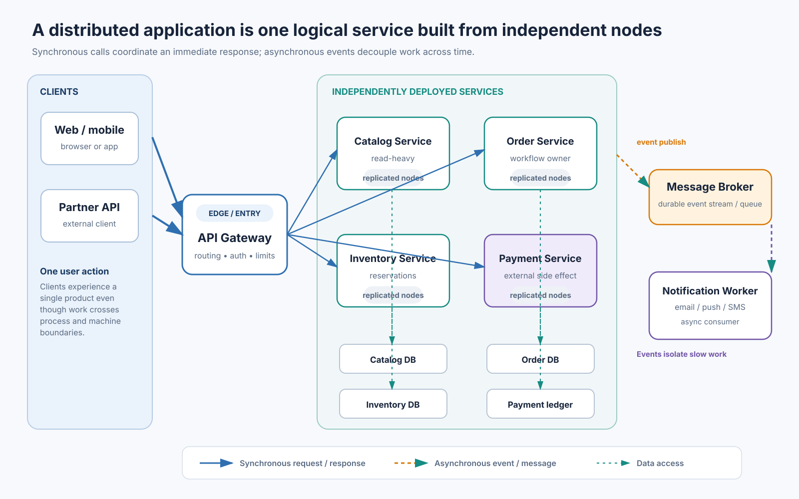
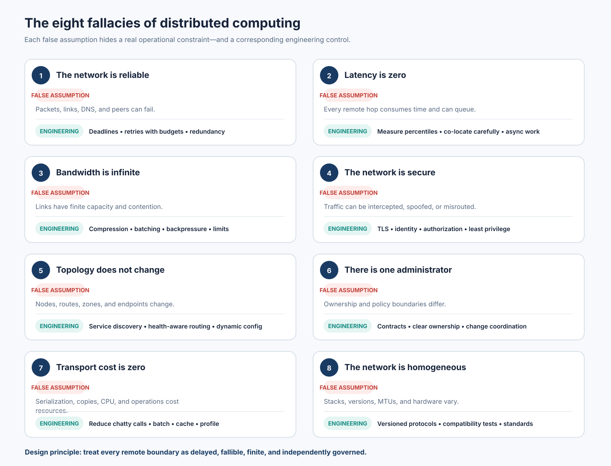
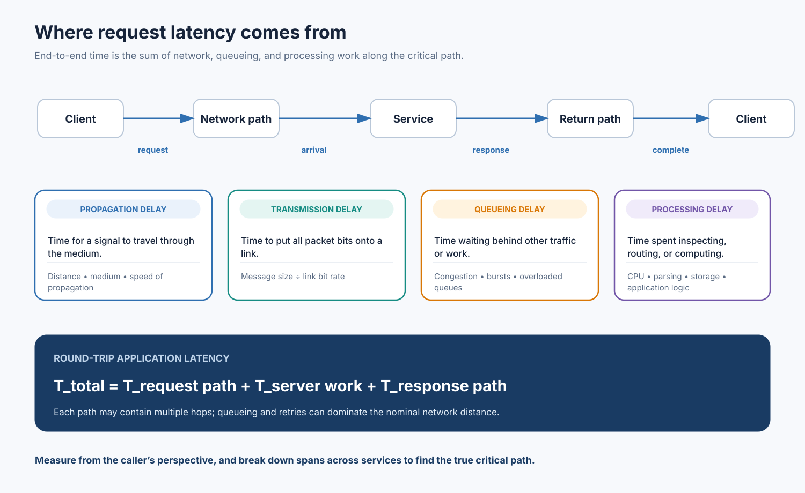
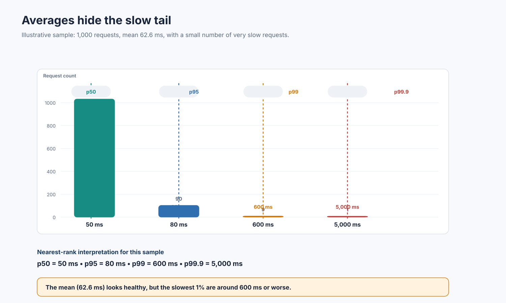
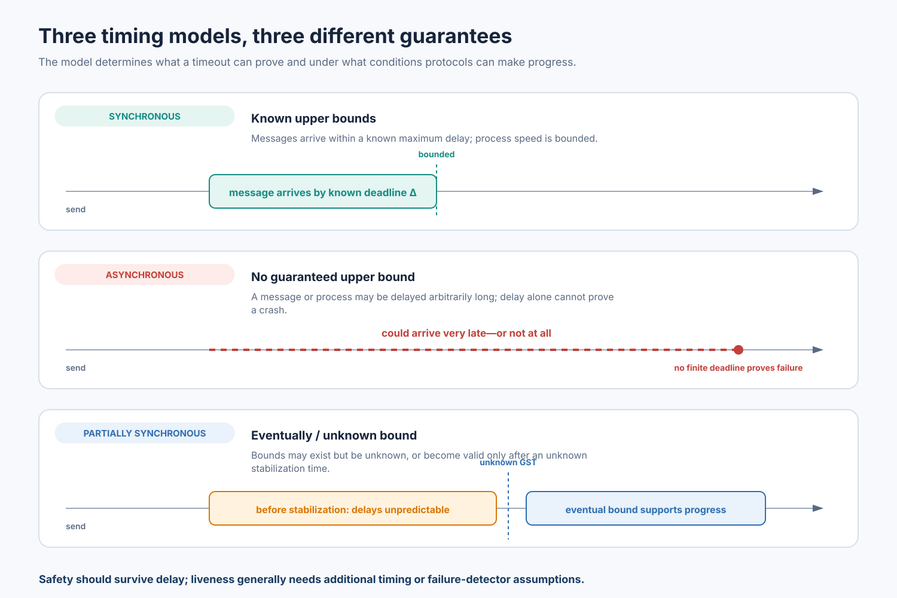
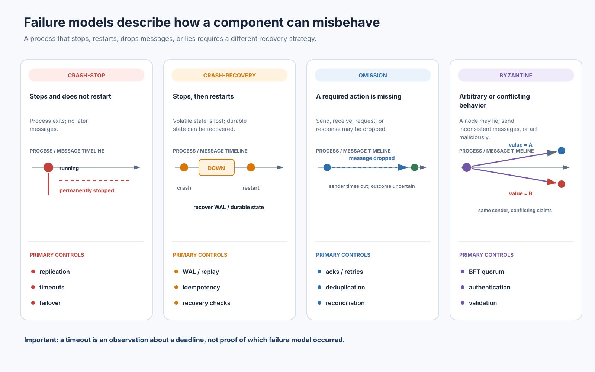
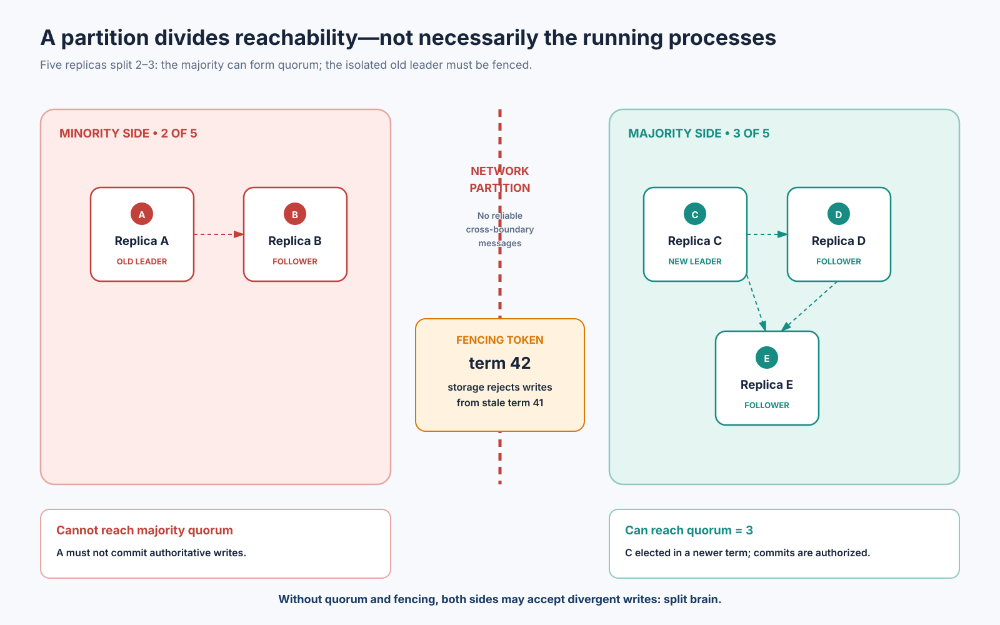
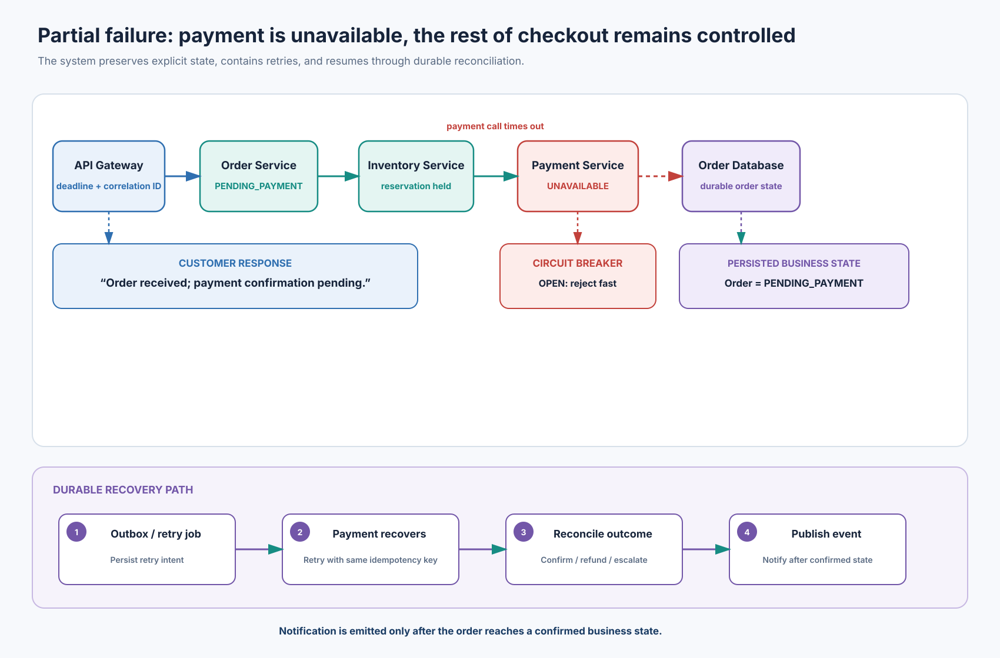

Distributed Systems Foundations
1. Distributed Systems Foundations
A comprehensive foundation for understanding distributed systems, reasoning about failures, designing resilient services, and preparing for system-design interviews.
Document:
01-distributed-systems-foundations.md
Level: Beginner through advanced system-design
interview preparation
Scope: Core concepts, performance, system and failure
models, unreliable networks, partial failure, case studies,
implementation patterns, mathematics, and interview questions.
How to Use This Chapter
Read Sections 5–9 in order if you are new to the subject. Sections 10–11 explain network partitions and partial failure. Sections 12–15 connect the theory to real systems, code, quantitative reasoning, and interview preparation. Sections 16–20 provide an engineering checklist, summary, glossary, and references.
The examples use Python-like code and simplified architectures. They are teaching examples, not drop-in production libraries. Production code also needs authentication, authorization, input validation, observability, resource limits, secure secret handling, schema evolution, deployment controls, and tests under realistic load.
Evidence convention: A documented practice is attributed to a public paper, official engineering post, or product documentation. An illustrative scenario is a plausible teaching example and is not a claim about a company’s private implementation. Company systems evolve; a historical engineering post should not be interpreted as a description of the company’s complete current architecture.
2. Learning Objectives
After working through this chapter, you should be able to:
- Define a distributed system and explain why independent computers are used to provide one logical service.
- Identify the eight fallacies of distributed computing and translate each into an engineering control.
- Distinguish latency, bandwidth, throughput, utilization, and tail latency, and calculate useful performance measures.
- Explain synchronous, asynchronous, and partially synchronous system models, including why timing assumptions matter to consensus and failure detection.
- Compare crash-stop, crash-recovery, omission, and Byzantine failures.
- Explain network partitions, quorum behavior, split brain, message-delivery semantics, and reconciliation.
- Recognize partial failure and design service boundaries that contain rather than amplify it.
- Apply deadlines, bounded retries, jitter, idempotency, circuit breakers, bulkheads, health checks, and graceful degradation.
- Evaluate distributed-system trade-offs using explicit assumptions and quantitative reasoning.
- Answer conceptual, scenario-based, and production-debugging interview questions with technically precise explanations.
3. Prerequisites
Helpful background includes basic programming, HTTP, TCP/IP, databases, processes and threads, and elementary probability. You do not need prior knowledge of consensus algorithms or distributed databases. Terms are introduced when they become necessary.
4. Detailed Table of Contents
- Title and Introduction
- Learning Objectives
- Prerequisites
- Detailed Table of Contents
- Introduction to Distributed Systems
- The Eight Fallacies of Distributed Computing
- Latency, Bandwidth, Throughput, and Tail Latency
- System Models
- Failure Models
- Network Partitions and Unreliable Networks
- Partial Failure
- Real-World Case Studies
- Practical Engineering Examples
- Mathematical Concepts and Formulas
- Interview Questions and Answers
- Common Mistakes and Best Practices
- Chapter Summary
- Key Takeaways
- Glossary of Important Terms
- Further Reading and References
Diagram Map
All diagrams are stored in svgs/ relative to this
Markdown file and are embedded at their relevant explanations below.
| SVG file | Chapter location | What it illustrates |
|---|---|---|
distributed-system-architecture.svg |
Section 5 — Introduction to Distributed Systems | One logical product composed of clients, gateway, independently deployed services, service-owned data, and an asynchronous broker path. |
eight-fallacies-overview.svg |
Section 6 — Eight Fallacies | The eight incorrect assumptions paired with their real-world constraint and an engineering control. |
latency-breakdown.svg |
Section 7 — Latency, Bandwidth, Throughput, and Tail Latency | Propagation, transmission, queueing, and processing delays across a request/response path. |
tail-latency-distribution.svg |
Section 7 — Tail Latency | The 1,000-request example, including the mean and p50/p95/p99/p99.9 markers. |
system-models-comparison.svg |
Section 8 — System Models | Synchronous, asynchronous, and partially synchronous delivery timelines. |
failure-models.svg |
Section 9 — Failure Models | Crash-stop, crash-recovery, omission, and Byzantine process behavior with corresponding controls. |
network-partition-split-brain.svg |
Section 10 — Network Partitions | A five-replica 2–3 partition, quorum boundary, new leader, and fencing token. |
partial-failure-ecommerce.svg |
Section 11 — Partial Failure | Checkout with payment unavailable, pending state, circuit breaker, reservation, and durable reconciliation. |


5. Introduction to Distributed Systems
5.1 Definition and Core Characteristics
A distributed system is a collection of independent computing nodes that communicate by sending messages over a network and coordinate their work to provide a service or solve a problem. To an external user or client, the collection may appear to behave like one coherent system even though computation, storage, and control are spread across multiple machines.
A useful formal description is:
A distributed system consists of multiple autonomous processes or nodes that communicate through a message-passing network, coordinate their state and actions, and jointly provide some externally observable behavior.
There is no single universally accepted one-line definition. The important properties are independence of nodes, communication over a network, coordination, and the possibility that components fail independently.
Core characteristics
| Characteristic | Meaning | Consequence for engineers |
|---|---|---|
| Multiple independent nodes | Each machine has its own CPU, memory, operating system, and failure state. | There is no single shared memory space or globally instantaneous state. |
| Message passing | Nodes exchange requests, responses, events, or replicated data. | Messages can be delayed, lost, duplicated, reordered, or rejected. |
| Concurrency | Many nodes and clients act at the same time. | Operations can overlap; races and conflicting updates must be handled. |
| No global clock | Local clocks differ and drift. | Wall-clock timestamps cannot automatically establish causal order. |
| Partial failure | One node or link can fail while others continue. | A system can be partly healthy and partly broken. |
| Independent scaling | Different components can receive different loads and scale separately. | Capacity planning, routing, and data partitioning become design concerns. |
| Shared logical service | Components cooperate behind a common API or user experience. | Coordination and consistency rules determine what users observe. |
| Geographic distribution (optional) | Nodes may be placed in different racks, zones, regions, or continents. | Latency, regulatory requirements, and correlated failures matter. |
A system does not have to span continents to be distributed. Three services running on different virtual machines in one data center are already a distributed system. Conversely, a single multi-core computer can execute parallel work without necessarily being a distributed system.
A simple example
Imagine an online store. A browser sends a checkout request to an API gateway. The gateway calls an order service, which checks inventory and asks a payment service to authorize a payment. The order service records the result, and a notification service later sends an email. The services may use separate processes, databases, and machines. They communicate through HTTP or RPC calls and asynchronous messages.
The customer sees one action—“Place order”—but the implementation is a coordinated collection of components. The customer-facing operation succeeds only if the system defines what happens when one component is slow, unreachable, or uncertain about whether a previous operation completed.

Diagram: One logical product composed of clients, gateway, independently deployed services, service-owned data, and an asynchronous broker path.
5.2 Why Distributed Systems Exist
Distributed systems are not automatically better than a single process or machine. They are used when the demands of a workload, organization, or operating environment exceed what one machine or one failure domain can reasonably provide.
1.2.1 Scale beyond one machine
A single server has finite CPU, memory, storage I/O, network interfaces, and connection capacity. When a workload becomes too large, work or data can be partitioned across machines.
Examples:
- A search engine divides a large corpus into partitions and searches multiple partitions in parallel.
- A video platform stores media across many storage nodes and delivers it through geographically distributed caches.
- An online store runs separate product, inventory, order, and payment workloads so that each can be scaled according to demand.
Horizontal scaling adds more machines. Vertical scaling increases the capacity of one machine. Horizontal scaling can increase aggregate capacity, but it introduces network communication, coordination, replication, and operational complexity.
1.2.2 Availability and fault tolerance
A single server can become a single point of failure. Replicas, redundant network paths, multiple availability zones, and failover mechanisms can keep a service operating after some failures.
Redundancy alone is not enough. Two replicas that share the same power supply, network switch, credentials, deployment pipeline, or faulty configuration can fail together. Good redundancy separates failure domains and tests the failover path.
1.2.3 Geographic reach and lower user-perceived latency
Placing caches or service replicas closer to users can reduce round-trip time and improve data delivery. A global service may route users to a nearby edge point or region while replicating selected data between regions.
This introduces trade-offs: data may be stale in a nearby replica; cross-region writes are expensive; legal or residency rules may restrict where data can be stored; and a regional outage requires an explicit recovery strategy.
1.2.4 Organizational and workload isolation
Independent services can have separate release cycles, ownership, scaling policies, and resource budgets. This can help large teams develop in parallel. It can also create coordination costs, network dependencies, versioning problems, and on-call complexity.
1.2.5 Data volume and parallel processing
Large analytical jobs can split input data into partitions, process those partitions on different workers, and combine the results. The MapReduce model is a classic example: the runtime handles partitioning, scheduling, inter-machine communication, and worker failures so that developers can express work as map and reduce functions. MapReduce paper
When should you distribute a system?
Consider distribution when there is a concrete requirement: capacity, availability across failure domains, geographic proximity, independent ownership, or large-scale parallel processing. Do not split a small application into services merely because microservices are fashionable. A distributed design adds network calls, operational dependencies, deployment complexity, observability requirements, and new failure modes.
5.3 Evolution and Components
Evolution from centralized to distributed computing
A simplified historical progression is:
- Single-machine applications: computation and data live in one program or host. Communication is usually a function call or local I/O.
- Client-server systems: clients request data or operations from a central server. The server may manage a database and shared business logic.
- Multi-tier applications: web, application, and database tiers are separated. Each tier may be replicated or independently managed.
- Clusters: many machines cooperate as one service, often behind a load balancer. Data may be partitioned or replicated.
- Service-oriented and microservice architectures: business capabilities are exposed as independently deployable services.
- Cloud and geo-distributed architectures: workloads span zones and regions, use managed infrastructure, edge networks, and globally replicated data systems.
This is not a one-way maturity ladder. A well-structured monolith can be a sound design. A modern application may combine a modular monolith, a few independently scaled services, managed databases, and event-driven workers.
Main components
| Component | Responsibility | Typical examples |
|---|---|---|
| Client | Initiates an operation and consumes the result. | Browser, mobile app, another service. |
| Network | Carries messages between nodes. | Ethernet, IP, TCP, UDP, HTTP/2, QUIC. |
| Load balancer | Distributes requests among instances. | Layer 4 or Layer 7 load balancer. |
| API gateway | Provides an external entry point and cross-cutting controls. | Routing, authentication, rate limits. |
| Service/process | Executes business or infrastructure logic. | Catalog service, search worker. |
| Data store | Persists state. | Relational database, key-value store, object storage. |
| Message broker/log | Buffers or records events for asynchronous processing. | Queue, publish/subscribe broker, append-only log. |
| Coordination service | Helps nodes agree on membership, leadership, or configuration. | Consensus-backed metadata store. |
| Discovery/configuration | Identifies endpoints and distributes settings. | DNS, service registry, configuration service. |
| Observability pipeline | Collects telemetry and correlates activity. | Metrics, logs, traces, alerts. |
How independent machines provide one service
A common request path looks like this:
- A client resolves a service name and opens a connection.
- A load balancer chooses a healthy instance according to its routing policy.
- The receiving service authenticates and validates the request.
- It performs local work and may call other services.
- Each remote call crosses a network boundary and can fail independently.
- State changes are committed to one or more data stores or emitted as events.
- A response is returned to the client, or an operation is accepted for asynchronous completion.
The design must specify which state is authoritative, which operations must be atomic, what happens when an acknowledgement is lost, how duplicate work is recognized, and how a node rejoins after a crash.
5.4 Distributed vs. Parallel vs. Decentralized
These terms overlap but are not interchangeable.
| Concept | Main idea | Memory and communication | Example |
|---|---|---|---|
| Parallel computing | Multiple execution units work on parts of a task at the same time. | May use shared memory, message passing, or both. | Multi-core numerical computation; GPU kernels. |
| Distributed computing | Independent networked machines cooperate on a task or service. | Separate address spaces; communication crosses a network. | Replicated database cluster; distributed search. |
| Decentralized system | Authority or control is distributed rather than concentrated in one central authority. | Often peer-to-peer coordination; may be distributed geographically. | Peer-to-peer network; some blockchain systems. |
A distributed system can still be centrally controlled. For example, a cluster may have a single control plane and many worker machines. A decentralized system is usually distributed, but not every distributed system is decentralized. A parallel program can run entirely on one computer and therefore need not be distributed.
5.5 Centralized, Monolithic, and Distributed Architectures
Monolithic application
A monolith packages most application functionality into one deployable unit. It may still use a separate database and external services, so “monolithic” does not mean “one physical machine.” A modular monolith can enforce internal boundaries while retaining in-process calls.
Strengths: simple local calls, straightforward transactions within one database, easier local development, fewer network failure modes, and often simpler deployment for small teams.
Weaknesses: independent scaling of modules is harder; releases may coordinate unrelated functionality; a process-level crash can affect the whole application; and a large codebase can become difficult to own if module boundaries are weak.
Distributed or microservice architecture
A service-oriented design separates capabilities into independently deployed processes. Each service can own its data and scale or release separately.
Strengths: fault and ownership boundaries can be clearer; heterogeneous technology can be used where justified; high-demand components can scale independently; teams can deploy independently if interfaces are stable.
Weaknesses: network calls replace local calls; multi-service transactions are difficult; end-to-end debugging requires tracing; schema and API compatibility become critical; and a failure can propagate across dependency chains.
Comparison
| Dimension | Monolith / modular monolith | Distributed services |
|---|---|---|
| Internal call | Usually in-process | Network request or message |
| Latency | Low for local calls | Includes network and queueing delay |
| Failure boundary | Often process or host | Service, node, network, zone, or region |
| Deployment | One artifact or coordinated set | Multiple independent artifacts |
| Data transaction | Often simpler within one DB | Often needs saga, outbox, or distributed transaction protocol |
| Scaling | Commonly scales the whole deployment | Can scale components independently |
| Observability | Stack traces and local logs may suffice for simple cases | Needs correlation IDs, distributed traces, and cross-service metrics |
| Operational burden | Lower initially | Higher: discovery, security, deployment, retries, ownership, incident response |
Practical decision rule
Start with clear modules and data boundaries. Extract a service when a real constraint—independent scaling, fault isolation, ownership, release cadence, security boundary, or technology requirement—justifies the network boundary. Do not confuse “many services” with “good architecture.”
5.6 Real-World Application Patterns
The following descriptions explain common patterns behind recognizable products. They are conceptual models, not claims about private or complete company architectures.
Google Search
A search service must process a very large corpus, build and refresh indexes, and serve queries under latency and availability constraints. The publicly documented Google File System and MapReduce papers describe distributed storage and large-cluster data processing foundations. Google’s SRE book also describes graceful degradation for Search: under overload, a service can search a smaller fraction of the index or disable nonessential features rather than fail every request. GFS paper · MapReduce paper · Google SRE service best practices
Amazon e-commerce
A large e-commerce workload naturally contains catalog reads, search, inventory, checkout, payments, order state, shipping, and notifications. The key lesson is not a guessed internal service diagram: it is that read-heavy and write-critical workflows have different scaling and correctness requirements. A product image can often be cached; a payment or inventory reservation needs explicit idempotency and state transitions. Amazon’s Builders’ Library discusses timeouts, retries, and backoff as resilience mechanisms for distributed calls. AWS Builders’ Library
Netflix
A streaming platform depends on client applications, service APIs, metadata, playback authorization, content delivery, telemetry, and recommendation-related workloads. A failure in a noncritical recommendation panel should not necessarily prevent playback. Netflix publicly documents Chaos Monkey as a tool that randomly terminates production instances to encourage resilience to instance failures. This is a documented resilience practice, not a complete description of Netflix’s current architecture. Netflix Chaos Monkey
Uber
A ride-hailing workload combines changing driver and rider locations, matching, trip state, maps, pricing, and notifications. Location updates are time-sensitive and often need different retention and consistency rules from payment records. A stale location may be acceptable for a short interval in some screens but not for dispatch decisions. The conceptual lesson is to partition by geography or workload where appropriate, bound the age of location data, and treat network delay as a first-class property.
Banking systems
Banking workloads prioritize durable transaction records, authorization, auditability, reconciliation, and protection against duplicate financial effects. A timeout after submitting a transfer does not prove that the transfer failed. The client must query or retry with a stable idempotency key and the bank must expose a reliable transaction status. Reconciliation detects mismatches between ledgers, payment rails, and downstream records.
Cloud platforms
Cloud applications distribute compute and data across fault-isolated zones and sometimes regions. AWS documents Availability Zones as isolated locations within a Region and recommends multi-AZ designs when workload availability requires surviving a zone failure. Replication or copying across Regions is not universally automatic; it must be configured for the service and data in question. AWS Regions and Availability Zones
6. The Eight Fallacies of Distributed Computing
The eight fallacies of distributed computing are assumptions that appear convenient but fail in real networked environments. The list is commonly associated with Peter Deutsch and other engineers at Sun Microsystems. It is a design checklist: every remote interaction should be treated as a potentially delayed, costly, and fallible operation. Historical overview · Oracle overview

Diagram: The eight incorrect assumptions paired with their real-world constraint and an engineering control.
6.1 Fallacy 1 — The Network Is Reliable
What the assumption means
The application assumes that a request sent to another machine will arrive, be processed, and produce a response. It treats the network as though it were a local function-call mechanism.
Why developers make the assumption
Local development environments are usually stable. A request to
localhost or a nearby development container often succeeds
quickly. Happy-path testing does not reproduce packet loss, route
changes, overloaded servers, DNS errors, connection resets, or a process
crash between receiving a request and sending its response.
Why it is false
Communication crosses multiple components: client network, Wi-Fi or mobile carrier, access network, routers, firewalls, load balancers, service meshes, server network stack, and the destination process. Any component can be unavailable or overloaded. TCP provides reliable ordered bytes within a connection under its protocol assumptions; it does not guarantee that an application operation completed, that a response will arrive before a deadline, or that a connection will remain available indefinitely.
What happens when it fails
- Requests time out or connections reset.
- A request may reach the server, but its response may be lost.
- A client may retry an operation that already committed.
- A slow dependency may consume threads, memory, or connection-pool slots.
- A retry storm can overload a service that was already struggling.
Scenario and production-level failure pattern
Illustrative scenario: A customer clicks “Pay.” The payment service commits the charge, but the response packet is lost. The browser sees a timeout and cannot know whether the charge happened. A naive client submits a second payment, producing a duplicate charge.
Production failure pattern: A transient network or dependency problem produces timeouts. Multiple upstream layers retry independently. The resulting retry traffic increases load on the dependency and causes further timeouts, turning a small fault into a cascading outage. Google’s SRE guidance explicitly warns that retries can amplify load and recommends bounded randomized exponential backoff. Cascading failures
Engineering response
- Set explicit deadlines for network operations.
- Distinguish retriable errors from permanent errors.
- Retry only operations whose semantics permit retry; use idempotency keys for side effects.
- Apply exponential backoff, jitter, and a retry budget.
- Use circuit breakers and bulkheads to contain failing dependencies.
- Record request IDs and operation IDs so ambiguous outcomes can be reconciled.
- Test packet loss, latency injection, server restarts, and connection resets.
Example
# A timeout limits how long the caller waits. It does not prove that the
# remote operation did not happen.
try:
response = payment_client.charge(
amount=5000,
currency="INR",
idempotency_key="order-8f3d-payment-v1",
timeout_seconds=2.0,
)
except TimeoutError:
# Query the payment operation by the same stable key before deciding
# whether a new charge should be attempted.
status = payment_client.get_operation_status(
idempotency_key="order-8f3d-payment-v1",
timeout_seconds=1.0,
)6.2 Fallacy 2 — Latency Is Zero
What the assumption means
The application assumes that communicating with a remote process takes negligible time, like calling a local function.
Why developers make the assumption
The first prototype may run services on one machine or on a fast local network. Small test payloads and low concurrency hide connection setup, serialization, queueing, network distance, and load-dependent delays.
Why it is false
A remote call includes multiple costs: client-side work, serialization, transmission, propagation, routing, queuing, server processing, response transmission, and deserialization. Even a physically nearby host has nonzero propagation and processing delay. A cross-region round trip is materially slower than an in-process function call.
What happens when it fails
- A chatty design makes many sequential calls and creates a long critical path.
- A page or API response waits on several services, causing latency amplification.
- A service spends a large fraction of its time waiting for remote dependencies.
- Timeouts chosen from local tests are too aggressive or too permissive in production.
Scenario and production-level failure pattern
Illustrative scenario: A product page calls a product service, which makes separate remote calls for price, inventory, reviews, and images. The frontend then calls recommendations and shipping estimates. The number of serial network round trips, not CPU usage, becomes the main response-time cost.
Production failure pattern: A dependency becomes slow. Upstream requests remain in flight, consuming resources. Queues grow, more requests exceed deadlines, and retry traffic increases. The correct response is not simply to increase the timeout; it is to understand the latency distribution and the critical dependency path.
Engineering response
- Measure end-to-end latency and each dependency span.
- Set an end-to-end deadline and propagate the remaining budget to downstream calls.
- Avoid chatty APIs; aggregate related reads where appropriate.
- Use caching for suitable read paths.
- Parallelize independent calls only when the extra fan-out and load are acceptable.
- Keep noncritical features off the critical path.
- Place compute or caches closer to the user when geography dominates latency.
6.3 Fallacy 3 — Bandwidth Is Infinite
What the assumption means
The design assumes that the network can transfer any amount of data without meaningful cost or contention.
Why developers make the assumption
Developer machines and office networks may have high bandwidth. A small test dataset does not reveal the cost of transferring large objects, replicating every write, serializing verbose payloads, or sending data to thousands of clients.
Why it is false
Links have finite capacity. Throughput is also constrained by protocol overhead, congestion, flow control, packet loss, shared traffic, CPU, disk, and the slowest link in the path. More bandwidth does not automatically remove propagation delay or application processing time.
What happens when it fails
- Large responses saturate links and increase queueing delay.
- Replication traffic competes with user traffic.
- A chatty service mesh adds significant bytes and connection overhead.
- Database backups or batch jobs degrade online request latency.
- Mobile users pay in time, battery, and data usage.
Scenario and production-level failure pattern
Illustrative scenario: A service sends a 15 MB JSON object to every worker for every update. At 400 updates per second, the raw payload rate is 6 GB/s before protocol overhead. The design exhausts network capacity long before the application logic becomes CPU-bound.
Production failure pattern: A batch replication or analytics job shares a constrained network with latency-sensitive requests. The user-facing service experiences rising queue delay and timeouts even though its own request rate has not changed.
Engineering response
- Measure bytes per request and bytes per second, not only RPS.
- Paginate and stream large responses.
- Compress payloads when CPU cost is justified by network savings.
- Avoid repeatedly sending unchanged data; use deltas, caching, and content hashes.
- Separate or rate-limit bulk traffic from interactive traffic.
- Set message-size limits and apply backpressure.
6.4 Fallacy 4 — The Network Is Secure
What the assumption means
The application assumes that internal network traffic is private, trusted, and safe from interception or modification.
Why developers make the assumption
Developers may trust traffic inside a corporate network, private subnet, VPC, cluster, or service mesh. They may assume that only trusted machines can reach an internal endpoint.
Why it is false
Networks are shared infrastructure and can be misconfigured or compromised. Threats include compromised workloads, stolen credentials, lateral movement, exposed management ports, insecure service discovery, traffic interception, replay, and supply-chain compromise. A private IP address is not an identity proof.
What happens when it fails
- Unauthorized callers invoke internal APIs.
- Sensitive data is exposed through unencrypted traffic or logs.
- Credentials captured from one workload are reused elsewhere.
- A compromised service impersonates another service.
- Replayed messages cause duplicate actions unless requests are protected.
Scenario and production-level failure pattern
Illustrative scenario: An internal admin endpoint has no authentication because it is reachable only inside a private subnet. A compromised application container reaches it and changes production configuration.
Production failure pattern: A breach in one service becomes a lateral-movement path into other services because network location is treated as authorization.
Engineering response
- Authenticate service identities, not merely IP addresses.
- Use TLS for service-to-service traffic; use mutual TLS where the trust model warrants it.
- Apply least-privilege authorization to each endpoint and data resource.
- Rotate and scope credentials; avoid long-lived shared secrets.
- Validate inputs and protect against replay where message semantics require it.
- Segment networks and restrict egress as well as ingress.
- Audit privileged operations and avoid putting secrets in logs.
6.5 Fallacy 5 — Topology Does Not Change
What the assumption means
The application assumes that machines keep the same addresses, routes, membership, and physical relationships.
Why developers make the assumption
Traditional on-premises servers can have stable hostnames and IP addresses. Cloud environments, containers, autoscaling groups, service meshes, and mobile networks are much more dynamic.
Why it is false
Instances are created, terminated, replaced, moved, drained, or rescheduled. IP addresses can change. DNS records and service endpoints can become stale. A node can be reachable from one subnet but not another. A route change can add latency or create a partition.
What happens when it fails
- Clients keep connecting to a dead or replaced instance.
- Hard-coded IP addresses make deployments fragile.
- Stale service discovery leads to connection failures.
- A node is considered healthy by one observer and unreachable by another.
Scenario and production-level failure pattern
Illustrative scenario: A service stores the IP address of a database replica in a configuration file. The replica is replaced during maintenance, but clients continue sending traffic to the old address. The service remains partially unavailable until configuration is refreshed.
Production failure pattern: During an autoscaling event or rolling deployment, stale service-discovery records continue routing a fraction of requests to terminated instances. Retries can then amplify load on the remaining healthy instances.
Engineering response
- Use DNS or a service-discovery mechanism with bounded caching and clear health semantics.
- Treat endpoint membership as dynamic.
- Handle connection resets and re-resolve or reconnect safely.
- Drain instances before termination where possible.
- Use load balancers and orchestrators without assuming they eliminate all stale-state windows.
- Test rolling deployments, autoscaling, failover, and node replacement.
6.6 Fallacy 6 — There Is One Administrator
What the assumption means
The system assumes that every machine and network is operated under one policy, by one team, with one interpretation of change and incident response.
Why developers make the assumption
A small team may own all machines in a lab. As the system grows, it crosses teams, cloud providers, regions, customer networks, managed services, and third-party APIs.
Why it is false
Different operators apply different security policies, maintenance schedules, rate limits, software versions, and incident procedures. A third-party dependency may change behavior without the application team’s control. An enterprise customer may have unusual proxies or DNS rules.
What happens when it fails
- Firewall or certificate changes break service-to-service calls.
- A third-party API rate limit causes errors.
- Operational changes are not coordinated across dependencies.
- Support teams cannot immediately diagnose a failure outside their administrative boundary.
Scenario and production-level failure pattern
Illustrative scenario: A payment provider rotates a certificate or changes an API limit. The application team has not tested certificate renewal or quota exhaustion, so payment calls fail despite all internal services being healthy.
Production failure pattern: A third-party provider rolls out a new rate limit or maintenance policy across a subset of tenants. One region begins receiving 429/5xx responses while internal services remain healthy; callers that retry without honoring the provider’s quota worsen the incident.
Engineering response
- Define explicit service contracts, quotas, escalation paths, and ownership.
- Monitor dependency health and version changes.
- Use certificate automation and expiry alerts.
- Design graceful behavior for third-party failures.
- Keep operational runbooks and contact paths for external providers.
- Treat vendor APIs as unreliable network dependencies, not trusted in-process libraries.
6.7 Fallacy 7 — Transport Cost Is Zero
What the assumption means
The application treats remote calls as free, ignoring the CPU, memory, bandwidth, serialization, connection, and operational costs of moving data.
Why developers make the assumption
A remote API may look syntactically identical to a local method call. Modern RPC frameworks hide many details, which is convenient but can obscure actual costs.
Why it is false
Every remote interaction consumes resources at both ends and along the path. It may require DNS lookup, connection establishment, TLS handshake, serialization, buffers, kernel work, network capacity, retries, and observability data. At high volume, small per-call costs become large aggregate costs.
What happens when it fails
- Fine-grained APIs generate thousands of remote calls per user action.
- A service mesh or tracing layer becomes a measurable part of the request cost.
- Repeated serialization and copying increase CPU and allocation pressure.
- Cross-zone or cross-region traffic creates latency and financial costs.
Scenario and production-level failure pattern
Illustrative scenario: A reporting endpoint retrieves 1,000 rows by issuing one RPC per row. The endpoint performs 1,000 serial round trips where one batch call would have sufficed.
Production-level failure pattern: An N+1 RPC pattern multiplies downstream calls per user request. A traffic increase then causes the shared dependency to saturate even though the edge RPS appears moderate. The resulting queueing and timeouts can affect unrelated services sharing that dependency.
Engineering response
- Design coarse-grained APIs and batch operations where appropriate.
- Avoid N+1 remote-call patterns.
- Reuse connections and use suitable multiplexing.
- Measure serialization time, bytes transferred, and calls per logical request.
- Keep data locality in mind when partitioning services and databases.
- Apply caching and request coalescing for safe repeat reads.
6.8 Fallacy 8 — The Network Is Homogeneous
What the assumption means
The system assumes that all machines, operating systems, runtimes, protocol versions, data formats, and network links behave identically.
Why developers make the assumption
A homogeneous development fleet is easier to reason about. Production systems evolve over years and contain mixed hardware, client versions, regions, operating systems, and dependency versions.
Why it is false
Different hosts can have different CPU performance, clock accuracy, MTU, TLS capabilities, kernel behavior, locale, architecture, runtime version, and network path. A rolling deployment intentionally creates a period when versions coexist. Mobile clients may remain old for months.
What happens when it fails
- A newer producer emits a field that an older consumer cannot parse.
- Different serialization libraries interpret optional fields differently.
- A request succeeds in one region but fails in another due to configuration or MTU differences.
- Clock or character-encoding assumptions cause data corruption or inconsistent behavior.
Scenario and production-level failure pattern
Illustrative scenario: A new service version starts emitting an enum value. An older consumer assumes the enum is exhaustive and crashes when it sees the new value. The failure appears only during a rolling deployment when both versions are active.
Production failure pattern: A schema migration deploys a producer before all consumers understand the new field or enum value. Only requests routed to mixed-version instances fail, making the incident intermittent and difficult to reproduce in a single-version test environment.
Engineering response
- Use backward- and forward-compatible API and schema evolution rules.
- Tolerate unknown optional fields and enum values where safe.
- Version protocols deliberately and support gradual rollout.
- Test mixed-version clusters and heterogeneous client versions.
- Normalize time, encoding, and units at service boundaries.
- Avoid assumptions about CPU architecture, locale, or filesystem behavior.
6.9 Consolidated Comparison of the Eight Fallacies
| Fallacy | Reality | Typical symptom | Production control |
|---|---|---|---|
| Network is reliable | Requests and responses can fail independently. | Timeout, reset, lost acknowledgement, duplicate side effect. | Deadline, idempotency, bounded retry, reconciliation. |
| Latency is zero | Remote communication has measurable delay. | Slow request chains, high p99, queue buildup. | Latency budgets, tracing, caching, parallelism where safe. |
| Bandwidth is infinite | Links have finite shared capacity. | Congestion, replication lag, slow large responses. | Compression, batching, limits, backpressure, traffic classes. |
| Network is secure | Internal traffic can be attacked or misconfigured. | Unauthorized access, interception, lateral movement. | TLS/mTLS, identity, authorization, segmentation. |
| Topology does not change | Membership and routes are dynamic. | Stale endpoints, connection failures. | Service discovery, DNS refresh, draining, reconnect logic. |
| One administrator | Multiple teams/providers operate dependencies. | Unexpected policy, quota, certificate, or maintenance changes. | Contracts, ownership, runbooks, dependency monitoring. |
| Transport cost is zero | Remote calls consume resources and money. | N+1 calls, excessive CPU/network, unexpected cloud cost. | Batching, coarse APIs, connection reuse, measurement. |
| Network is homogeneous | Hosts and versions differ. | Mixed-version bugs, encoding or protocol incompatibility. | Compatibility rules, staged rollout, cross-version tests. |
Engineering principle: A network call is not a local function call with a slightly larger latency. It is an operation with an independent failure mode, resource cost, security boundary, and uncertain outcome.
7. Latency, Bandwidth, Throughput, and Tail Latency
These four ideas describe different aspects of performance. They are related, but none can be substituted for another.
- Latency: How long does one operation take?
- Bandwidth: How much data can a link carry per unit time?
- Throughput: How much useful work does a system complete per unit time?
- Tail latency: How slow are the slowest portions of the request population?
A service can have high bandwidth but poor latency, low average latency but poor p99, or high theoretical throughput while delivering very little useful work because requests are timing out or being retried.
7.1 Latency
Latency is the elapsed time between an initiating event and the corresponding completion or observation. For a request-response API, it is commonly measured from the client’s request start to receipt of the complete response. Always document the measurement boundary: client-observed latency, server processing latency, database query latency, and network round-trip time are different measurements.
Common units:
- 1 second = 1,000 milliseconds (ms)
- 1 ms = 1,000 microseconds (µs)
- 1 µs = 1,000 nanoseconds (ns)
Network latency vs. application latency
Network latency measures time attributable to communication through the network. A ping or round-trip-time measurement is not the same as the time for an application RPC to complete.
Application latency includes work performed by the client and server: queueing, authentication, routing, serialization, business logic, database access, and response construction. An application request may also make several downstream calls.
A rough decomposition for one RPC is:
The terms depend on the instrumentation boundary. For example, some network time may already include routing or transport retransmission. Do not add overlapping measurements blindly.
Four components of network delay
A useful simplified model divides network delay into four components:
- Propagation delay: Time for a signal to travel over the physical medium.
- Transmission delay: Time to put all bits of a packet or message onto the link.
- Processing delay: Time for devices or hosts to inspect headers, route packets, perform encryption, or process protocol state.
- Queuing delay: Time spent waiting in a router, interface, kernel, proxy, or application queue.
A simplified one-way model is:
For a round trip, account for both directions and any request/response processing. The actual path may be asymmetric.

Diagram: Propagation, transmission, queueing, and processing delays across a request/response path.
Propagation delay
Signals travel at a finite speed. Fiber propagation is roughly two-thirds the speed of light in vacuum, but real paths include route length, repeaters, switching, and routing. Geographic distance therefore places a lower bound on round-trip time.
Example: A theoretical 1,000 km fiber path at approximately 200,000 km/s takes about 5 ms one way. A 2,000 km round trip would therefore take at least about 10 ms before routing, queueing, and processing are included. This is an idealized lower-bound illustration, not a prediction for an actual provider route.
Transmission delay
Example: Transmitting 10 megabits over a 100 megabit-per-second link requires at least 0.1 seconds (100 ms) to serialize those bits, ignoring protocol overhead and contention.
Processing delay
Processing includes work in network devices and endpoints: packet inspection, routing-table lookup, TLS record processing, protocol parsing, deserialization, validation, and application logic. Hardware acceleration can reduce some costs; complex proxies and expensive payload parsing can increase them.
Queuing delay
A packet or request waits when its next processing resource is busy. Queueing delay is often variable and load-sensitive. As utilization approaches capacity, a small increase in demand can produce a disproportionately large increase in waiting time. Queueing is a major contributor to tail latency and cascading failures.
Factors that affect latency
- Physical distance and routing path.
- Number of sequential network round trips.
- DNS lookup and connection setup.
- TLS handshakes and authentication.
- Payload size and serialization format.
- Server CPU, garbage collection, disk I/O, and lock contention.
- Database query plans and storage latency.
- Queue length and worker/thread availability.
- Network congestion, loss, and retransmission.
- Load balancers, proxies, service meshes, and middleware.
- Cache hit ratio and cache locality.
- Cross-region or cross-zone communication.
Sequential vs. parallel calls
If a service makes three dependent calls in sequence, their latencies add:
If independent calls execute concurrently, the waiting component is approximately the maximum of the call durations:
Parallelism reduces the critical path but increases concurrent load, resource use, and fan-out risk. It is not a free optimization.
7.2 Bandwidth
Bandwidth is the data-carrying capacity of a communication link per unit time. It is usually measured in bits per second (bps): Kbps, Mbps, Gbps, or Tbps. Storage and file sizes are often expressed in bytes; 1 byte is 8 bits. Be careful with decimal network units (1 Mbps = 1,000,000 bits/s) versus binary memory units (1 MiB = 1,048,576 bytes).
Theoretical vs. effective bandwidth
- Theoretical or nominal bandwidth is the advertised or engineered link rate.
- Effective application throughput is the useful payload rate achieved after protocol headers, acknowledgements, retransmissions, flow control, encryption, congestion, and competing traffic are considered.
A 1 Gbps interface does not mean one application can continuously transfer 1 Gbps of useful data. It may share the interface with other workloads, and it may be limited by CPU, disk, or the receiver.
Transfer-time example
For a file containing 100 MB (using decimal megabytes), the raw payload is approximately 800 megabits. At an ideal 100 Mbps rate:
The actual transfer takes longer when protocol overhead, congestion, competing traffic, retransmissions, or receiver limits are present. If only 60 Mbps of effective throughput is achieved, the transfer takes approximately 13.3 seconds.
Bandwidth bottlenecks
Common bottlenecks include a shared NIC, a virtual network limit, cross-zone links, a proxy, a database replica stream, an overloaded receiver, or a storage device that cannot consume incoming data fast enough. A bandwidth bottleneck often appears as growing queues, rising latency, throughput plateauing, retransmissions, or packet drops.
Bandwidth is not latency
A high-bandwidth link can transfer a large file quickly after transfer begins but still have substantial round-trip latency. Conversely, a low-latency link may have limited capacity for large transfers. For a tiny RPC, propagation and processing may dominate. For a huge object, serialization and bandwidth may dominate.
7.3 Throughput
Throughput is the amount of useful work completed per unit time. It must be defined in workload-specific terms.
Examples:
- Requests per second (RPS or QPS): completed API requests per second.
- Transactions per second (TPS): committed transactions per second.
- Messages per second: messages successfully processed or delivered per second.
- Data throughput: bytes transferred or processed per second.
- Jobs per minute: completed background jobs per minute.
Always distinguish offered load from completed throughput. A service receiving 20,000 requests/s but completing 12,000 requests/s has not achieved 20,000 RPS of useful throughput.
Factors affecting throughput
- CPU and memory capacity.
- Disk and database I/O.
- Network bandwidth and connection limits.
- Worker count and concurrency limits.
- Lock contention and serial sections.
- Request size and workload mix.
- Cache hit rate.
- Queue capacity and backpressure.
- Downstream dependency capacity.
- Retry amplification and error handling overhead.
Saturation and bottlenecks
A component approaches saturation when demand consumes most of its effective capacity. At that point, queues tend to grow and latency rises. A service can be CPU-bound, memory-bound, I/O-bound, network-bound, lock-bound, or dependency-bound.
Adding application instances helps only if the bottleneck is in the work those instances perform and the downstream systems can accept the extra traffic. If every new API instance doubles database queries, the database may become the new bottleneck.
Horizontal scaling
If one independent worker can process 500 requests/s, then four ideal workers might process around 2,000 requests/s. In reality, scaling is rarely perfectly linear because of shared databases, coordination, cache misses, load imbalance, network overhead, and synchronization. A useful capacity model is:
7.4 Tail Latency
Tail latency describes the slow end of a latency distribution. It matters because users and upstream services experience individual requests, not just the arithmetic mean.
Percentiles: p50, p90, p95, p99, p99.9
A percentile is a value at or below which a given percentage of observations fall.
- p50: median; 50% of observations are at or below this value.
- p90: 90% are at or below it.
- p95: 95% are at or below it.
- p99: 99% are at or below it; 1% are slower.
- p99.9: 99.9% are at or below it; 0.1% are slower.
Percentiles depend on the estimator and histogram method. For a small manually sorted sample, a common nearest-rank definition is:
where p is expressed between 0 and 1 and N
is the number of observations. Monitoring systems may use histogram
buckets or interpolation, so values need not match nearest-rank results
exactly.
Numerical example: a good mean can hide a poor tail
Suppose a service records 1,000 requests in a measurement window:
| Request group | Count | Latency |
|---|---|---|
| Normal requests | 900 | 50 ms |
| Slightly slower requests | 90 | 80 ms |
| Slow requests | 9 | 600 ms |
| Very slow request | 1 | 5,000 ms |
The mean is:
Using nearest-rank percentiles:
| Metric | Approximate value | Interpretation |
|---|---|---|
| p50 | 50 ms | The typical request is fast. |
| p90 | 50 ms | 90% have completed by 50 ms in this sample. |
| p95 | 80 ms | 5% take longer than about 80 ms. |
| p99 | 600 ms | The slowest 1% are around 600 ms or worse. |
| p99.9 | 5,000 ms | The very slowest request takes 5 seconds. |
The mean of 62.6 ms sounds healthy, but a request near p99 takes almost ten times the mean, and the p99.9 request takes about 80 times the mean. A user whose request lands in the tail experiences the slow response directly. An upstream service may also hold resources while waiting.

Diagram: The 1,000-request example, including the mean and p50/p95/p99/p99.9 markers.
Why tail latency becomes important at scale
At low traffic, an occasional 1-second request may be difficult to notice. At high traffic, even a 0.1% slow-request rate can affect many users. At 100,000 requests per second, 0.1% corresponds to 100 slow requests every second.
If a page requires multiple downstream services, the probability that
at least one dependency is slow increases with fan-out. If
n independent dependencies each meet a latency target with
probability q, then:
For 10 dependencies, each meeting a target 99% of the time:
For 100 such dependencies:
This simplified independence model illustrates tail amplification. Real dependencies may be correlated, so actual outcomes can be better or worse. Fan-out design should minimize critical dependencies and avoid waiting on optional work.
Why the average is misleading
An average collapses the entire distribution into one value. It does not tell you whether every request is moderately slow or most requests are fast while a small fraction are extremely slow. Two services can have the same mean and very different user experiences.
Track histograms or mergeable histogram summaries, not only mean latency. Be careful when aggregating percentiles: the average of host-level p99 values is generally not the fleet-wide p99. To compute an accurate fleet percentile, aggregate compatible histogram buckets or use a method designed for distributed quantile estimation.
Coordinated omission
Coordinated omission occurs when a load generator fails to record the latency of requests that should have been issued while it was waiting for a previous slow response. The measurement system and the server slow down together, so the generator omits samples precisely during the worst intervals. This can make a saturated service look faster than it is under a fixed offered load.
For example, a closed-loop test sends one request, waits for the response, and only then sends the next. If a response takes 2 seconds, the test does not generate the requests that a real 5,000 RPS workload would have sent during those 2 seconds. Prefer a load model that represents the real arrival process, record queueing and missed schedule intervals, and use tooling that corrects for coordinated omission when appropriate.
Head-of-line blocking
Head-of-line blocking occurs when one delayed item prevents later independent items from progressing. It can occur in a FIFO application queue, a connection-level transport stream, a worker pool, or a multiplexed protocol under particular flow-control conditions. Separate queues or streams, prioritize urgent work, bound payload sizes, and avoid letting a slow operation monopolize a shared resource.
Queue buildup
If requests arrive faster than they can be processed, queue length increases. A queue can absorb a short burst, but it cannot solve sustained overload. An unbounded queue converts overload into memory growth and latency growth. Bound queues and choose an explicit policy: reject, shed, defer, or persist work.
Little’s Law provides a useful relationship:
where L is the average number of items in the system,
λ is the average arrival or completion rate in a stable
system, and W is average time in the system. At 1,000
requests/s and an average time of 0.2 seconds, about 200 requests are in
flight on average. If average time grows to 2 seconds at the same
throughput, about 2,000 requests are in flight, increasing resource
pressure.
Techniques to reduce tail latency
1. Timeouts and deadlines
Set a maximum duration for each remote call and an end-to-end deadline for the logical request. A timeout protects resources and gives the caller a decision point. It does not prove that the remote operation did not happen. Propagate the remaining time budget to downstream calls and cancel work that is no longer useful. gRPC documentation recommends setting realistic deadlines and explains deadline propagation. gRPC deadlines
2. Retries with exponential backoff
Retries can mask transient failures, but they create more work. Use
them only for errors likely to be transient and operations that are safe
to retry. For attempt k, a common capped exponential delay
is:
3. Jitter
Add randomness to retry delays so many clients do not retry simultaneously. With full jitter:
AWS documents exponential backoff with jitter as a way to reduce synchronized retry load. AWS Architecture Blog
4. Circuit breakers
After repeated failures, stop sending calls to the dependency temporarily. Fail fast or use a fallback. After a cool-down, allow a limited number of trial requests. A circuit breaker protects both the caller and the failing dependency; it is not a substitute for timeouts.
5. Hedged requests
For an idempotent read, send a request to one replica and, if it has not completed after a carefully chosen delay, send a duplicate to another replica. Use the first valid response and cancel the others. Hedging can reduce tail latency when replica delays are independent, but it increases load and can worsen overload. It needs strict budgets and should not be used blindly for writes.
6. Load shedding
Reject or drop work that cannot be completed within the useful time budget. Returning a fast overload response can protect the remaining capacity and be better than queueing every request until all requests fail.
7. Caching
Serve frequently requested or noncritical data from a cache when the freshness contract allows it. Caching may reduce both dependency load and response time, but cache invalidation, stampedes, stale reads, and common-mode cache outages need to be considered.
8. Request prioritization
Reserve capacity for critical operations. For example, a checkout confirmation may deserve higher priority than a recommendation refresh. Enforce fairness so low-priority or noisy tenants cannot starve others.
7.5 Relationship Between Latency, Bandwidth, Throughput, and Tail Latency
| Concept | Primary question | Typical unit | Common failure symptom |
|---|---|---|---|
| Latency | How long does one operation take? | ms, µs | Slow API response. |
| Bandwidth | How much data can the link carry? | Mbps, Gbps | Transfer bottleneck or congestion. |
| Throughput | How much useful work completes? | RPS, TPS, MB/s | Capacity ceiling or rejected work. |
| Tail latency | How slow are the slowest requests? | p95/p99/p99.9 ms | Intermittent user-visible stalls. |
They interact. Low bandwidth can create queues and increase latency. High latency increases in-flight work at a given throughput. Excessive throughput demand can saturate shared resources and worsen p99. A design should monitor all four dimensions, along with errors and resource saturation.
8. System Models
A system model states the assumptions an algorithm makes about process execution, message delivery, clocks, and failures. Distributed algorithms are correct only under their stated model. An implementation that silently assumes stronger timing guarantees than the deployment provides can fail in production.
8.1 Synchronous Systems
A synchronous system assumes known upper bounds on important timing quantities. A simplified synchronous model may assume:
- A message sent between correct nodes arrives within a known maximum
delay
Δ. - A correct process completes a specified step within a known time bound.
- Relative clock drift is bounded by a known amount.
If a response does not arrive within the known maximum, the algorithm can reason that a required timing assumption has been violated.
Advantages
- Timeouts can have a clear relationship to known upper bounds.
- Failure detection can be stronger because slow-but-correct execution has a known limit.
- Some consensus and coordination algorithms become easier to reason about.
- Real-time guarantees can be stated precisely.
Limitations
- Wide-area networks do not provide stable global delay bounds under all conditions.
- Processing time changes with load, scheduling, garbage collection, and hardware contention.
- A bound that is correct in one operating regime may be exceeded during an incident.
- Strict synchrony assumptions can be too strong for ordinary cloud services.
Examples
A carefully engineered real-time control network may have bounded scheduling, network, and clock behavior. A laboratory system with a deterministic network and controlled load may also approximate synchrony. Ordinary Internet and cloud RPCs should not be assumed to be synchronous merely because they are usually fast.
8.2 Asynchronous Systems
An asynchronous system makes no fixed upper-bound assumption about message delay or process execution speed. A message may arrive quickly, very late, or not at all. A process may be slow because it is overloaded or may have crashed; from the perspective of another process, those situations can be indistinguishable for a while.
Characteristics
- No known maximum message-delivery time.
- No known maximum processing time.
- No assumption that local clocks are synchronized.
- Execution and message ordering can be unpredictable.
Why reasoning is difficult
Suppose node A sends a message to node B and receives no response. There are several possible explanations:
- The request was lost.
- The request is delayed in the network.
- B received it but is slow.
- B processed it but the response was lost.
- B crashed before processing.
- B processed the operation and crashed before acknowledging it.
A cannot distinguish these possibilities from the absence of a response alone. A timeout is a local policy decision about how long to wait, not a proof of remote failure.
Examples
The Internet, mobile networks, and most ordinary cloud RPC environments are commonly modeled as asynchronous or partially synchronous from the application algorithm’s point of view. Actual protocols still have timers and practical bounds, but those bounds may not be guaranteed under every condition.
8.3 Partially Synchronous Systems
A partially synchronous system lies between strict synchrony and full asynchrony. Timing bounds may exist but are not known in advance, or the bounds may become valid only after some unknown stabilization time.
Two common formulations are:
- There are fixed upper bounds on message delay and relative process speed, but the algorithm does not know those bounds.
- The bounds are known, but they are guaranteed to hold only after an
unknown time
T.
The concept was formalized in work by Dwork, Lynch, and Stockmeyer on consensus in the presence of partial synchrony. MIT record and abstract
Why it is practical
Real networks often behave well enough most of the time for timeouts and leader election to make progress, but temporary delay spikes and failures cannot be excluded. A practical distributed algorithm can preserve safety even when timing assumptions are temporarily violated and regain liveness once communication stabilizes.
For example, a consensus protocol may increase its election timeout after repeated failures. A node may temporarily suspect a leader when responses are delayed. Once network conditions stabilize, a new leader can be elected and the protocol can make progress.
Comparison
| Property | Synchronous | Asynchronous | Partially synchronous |
|---|---|---|---|
| Message delay | Known upper bound | No guaranteed upper bound | Bound exists but may be unknown or eventually valid |
| Process speed | Known bounded variation | No known bound | Unknown or eventually bounded |
| Failure detection | Can rely on known timing bounds | Cannot perfectly distinguish crash from delay using timeout alone | Can suspect failures; accuracy improves when timing stabilizes |
| Liveness | Under stated bounds and fault assumptions | May be impossible for some problems with failures | Often achievable after stabilization with suitable protocol assumptions |
| Typical use | Hard real-time or controlled network model | Theoretical model for arbitrary delays | Practical consensus and cloud service reasoning |

Diagram: Synchronous, asynchronous, and partially synchronous delivery timelines.
8.4 Implications for Timeouts, Failure Detection, Leader Election, and Consensus
Timeouts
A timeout is a threshold chosen by a caller or protocol. In an asynchronous model, no finite timeout perfectly distinguishes a crashed process from a slow one. Timeout selection is therefore a trade-off between detection speed and false suspicion.
Failure detection
A failure detector provides information about which processes may have failed. In asynchronous systems, practical detectors are often unreliable: they can make mistakes, such as suspecting a slow process. Chandra and Toueg formalized failure detectors using properties such as completeness and accuracy. IBM Research summary
Leader election
Leader election uses timeouts, heartbeats, terms/epochs, and voting rules. A delayed heartbeat can cause a false suspicion. Protocols use monotonically increasing terms or epochs and quorum rules so that a stale leader cannot safely commit conflicting decisions after a newer leader is elected.
Consensus
Consensus asks correct nodes to agree on a value despite failures. Safety means they do not decide conflicting values; liveness means they eventually decide under the stated assumptions. The FLP impossibility result shows that in a fully asynchronous message-passing system, deterministic consensus cannot guarantee termination in every execution if even one process may crash. It does not say consensus systems cannot work in practice; practical systems add timing assumptions, randomized techniques, or failure-detector assumptions. FLP paper
Interview nuance: FLP is a statement about guaranteed termination in a formal asynchronous model, not a claim that Raft, Paxos, or production consensus systems are unusable. Such systems preserve safety and make progress under practical timing and quorum assumptions.
9. Failure Models
A failure model describes the behavior a system is expected to tolerate. The model is a contract between algorithm design and reality. A protocol designed for crash failures does not automatically tolerate arbitrary malicious behavior.
9.1 Crash-Stop Failures
A crash-stop process behaves correctly until it crashes, then permanently stops taking steps. It does not recover during the modeled execution.
Characteristics
- The process stops executing.
- It sends no further messages.
- It does not behave maliciously before the crash.
- The model excludes recovery of that process.
Detection and recovery
Other nodes infer a crash through missed heartbeats, failed connections, or timeouts. In an asynchronous environment, this inference may be wrong because delay can look like failure. Recovery usually means promoting a replica, rescheduling the workload, or starting a replacement process. The replacement is a new process in the model, not the same process continuing from its previous state.
Example
A stateless API worker loses power and never restarts. The load balancer stops sending it traffic after a health-check threshold, and another worker handles requests. The database and other workers continue operating.
9.2 Crash-Recovery Failures
A crash-recovery process may stop and later restart. After restart, some state may survive and other state may be lost.
Volatile vs. persistent state
- Volatile state: RAM, open connections, thread state, in-memory caches, temporary locks. It is generally lost when the process or host crashes.
- Persistent state: committed database records, durable logs, files on persistent storage, replicated log entries. It may survive, subject to storage and durability guarantees.
A restart is not simply “continue where execution stopped.” The process must determine which operations committed, which were partially applied, and which messages may be redelivered.
Recovery procedures
- Load durable configuration and identity.
- Recover committed state from a write-ahead log or database log.
- Discard or roll back incomplete transactions according to the storage engine’s rules.
- Re-establish connections and service registration.
- Reconcile unacknowledged messages and in-flight operations.
- Resume serving only after the required readiness checks pass.
Write-ahead logging (WAL)
A database or stateful service may write a change record to a durable log before applying the change to its main data structures. During recovery, it replays committed records and ignores or rolls back incomplete records according to its protocol. The exact WAL guarantees depend on flush ordering, storage guarantees, transaction boundaries, and implementation.
Idempotency and duplicate requests
Suppose a process commits an order and crashes before sending an acknowledgement. The client retries. Without an idempotency mechanism, the service may create a second order. A stable request identifier and a durable record of the operation result allow the service to return the prior result rather than repeating the side effect.
Example
A payment worker receives a message, writes a durable payment-operation record, calls an external provider with an idempotency key, stores the provider result, and only then acknowledges the queue message. If it crashes after the provider call but before acknowledgement, the message may be redelivered. The same idempotency key makes the provider operation safe to repeat or query.
9.3 Omission Failures
An omission failure occurs when a process or communication channel fails to send or receive a message that should have been sent or received.
Types of omission
| Type | Meaning | Example |
|---|---|---|
| Send omission | A sender fails to send a message. | Process crashes before enqueueing a response. |
| Receive omission | A receiver fails to receive a message. | Packet or message is dropped before delivery to the process. |
| Channel omission | The channel fails to deliver a sent message. | Network path drops packets or a broker loses an uncommitted message. |
| Request loss | The server never receives the request. | Request packet or connection is lost. |
| Response loss | The server sends a response, but the client never receives it. | Server commits a write, response is dropped. |
Causes
- Network congestion and packet loss.
- Process crash or resource exhaustion.
- Queue overflow or message broker failure.
- Connection reset or client cancellation.
- Serialization or protocol rejection.
- Application code that catches or drops an error without reporting it.
Detection and mitigation
Use acknowledgements, sequence numbers, durable queues, timeouts, retries with idempotency, and end-to-end reconciliation. Transport-level reliability does not prove application-level delivery or processing. For a message broker, understand exactly when a message is considered persisted, delivered, and acknowledged.
Example
A notification message is accepted by a worker but lost when the worker crashes before acknowledging it. A durable queue can redeliver it. Since the first attempt might have sent the email before the crash, the notification sender should also have a deduplication strategy or an operation identifier to avoid duplicate notifications when duplicates are undesirable.
9.4 Byzantine Failures
A Byzantine failure is arbitrary behavior by a node: it may send incorrect values, send different values to different peers, violate the protocol, act maliciously, or behave unpredictably.
Why it is harder
With a crash failure, a node either follows the protocol or stops. With a Byzantine failure, the node may actively lie or collude. A receiver cannot assume that a message from a reachable node is truthful. The protocol must detect or tolerate inconsistent statements and forged or malicious behavior.
Byzantine Generals Problem
The Byzantine Generals Problem is a classic thought experiment about distributed agreement when some participants may be traitors. Loyal participants must reach a consistent decision despite contradictory messages from malicious participants. It motivates Byzantine fault-tolerant protocols.
Byzantine fault tolerance
Byzantine fault-tolerant (BFT) systems use quorum protocols, message
authentication, cryptographic signatures or MACs, and assumptions about
the number of faulty participants. A common simplified bound for
classical state-machine BFT protocols is n ≥ 3f + 1 to
tolerate f Byzantine replicas, with a commit quorum of
2f + 1 under the protocol’s assumptions. This is not a
universal formula for every BFT design; topology, synchrony assumptions,
authentication, and protocol variant matter.
Applications
BFT techniques are relevant when nodes may be compromised or owned by mutually distrustful parties, such as some blockchain networks, cross-organization systems, or security-critical replicated control planes. A conventional internal microservice architecture usually begins with crash and omission models, while still using strong security controls to reduce malicious behavior.
9.5 Failure Model Comparison
| Dimension | Crash-stop | Crash-recovery | Omission | Byzantine |
|---|---|---|---|---|
| Behavior | Stops permanently. | Stops and may restart. | Fails to send or receive required messages. | Arbitrary, contradictory, or malicious behavior. |
| Detection difficulty | Often inferred by timeout; delay can confuse it. | Must also determine restart and recovered state. | May look like delay or a crash. | High; a live node may send plausible but false messages. |
| Recovery | Replace or fail over. | Restart and recover durable state. | Retry, redeliver, reconcile, or use another path. | Protocol-level tolerance, authentication, and quorum validation. |
| Typical causes | Power loss, process crash. | OS restart, machine reboot, process restart. | Packet loss, queue overflow, dropped response. | Compromise, software corruption, malicious participant. |
| Main mitigation | Replication, monitoring, rescheduling. | WAL, durable state, idempotency, replay. | Acknowledgements, retries, deduplication, durable queues. | BFT protocol, quorum, cryptographic identity, validation. |
| Example | Worker VM permanently stops. | Database node restarts after host failure. | Payment response lost after commit. | Replica sends conflicting log entries to peers. |

Diagram: Crash-stop, crash-recovery, omission, and Byzantine process behavior with corresponding controls.
10. Network Partitions and Unreliable Networks
10.1 What Is a Network Partition?
A network partition is a condition in which nodes that normally communicate cannot exchange messages reliably across some boundary. The nodes may still be running and serving requests locally, but communication between groups is unavailable or severely impaired.
A partition does not require a physical cable to be cut. It can be caused by routing problems, firewall rules, DNS failures, overloaded network devices, cloud infrastructure issues, or asymmetric connectivity. It may be complete or partial: one direction can work while the reverse path fails, or only certain ports, protocols, or subnets may be affected.
How partitions occur
- Physical link, fiber, or network-interface failure.
- Router, switch, gateway, or load-balancer failure.
- Route advertisement or routing-table errors.
- DNS resolver failure or stale DNS records.
- Firewall, security-group, network ACL, or service-mesh misconfiguration.
- Cloud availability-zone or regional network incident.
- Subnet isolation or a broken overlay network in a container cluster.
- Congestion severe enough that heartbeats and application traffic miss deadlines.
- A security control intentionally isolates a host or segment.
Partial connectivity
Consider five database replicas distributed across three zones. A network issue might isolate two replicas from the other three while each group can still communicate internally. From the perspective of the nodes, the cluster appears divided into two connected components.
The key question is not simply “Are the servers up?” It is “Which nodes can communicate with which other nodes, within what timing bounds, and with what confidence?”
10.2 Effects on Distributed Databases
A partition creates a choice between continuing operations independently and refusing operations that need agreement.
Suppose replicas A, B, and C hold a replicated account balance. A partition separates A from B and C. If both sides accept conflicting writes to the same account, they can diverge. Once the network heals, the system must decide which write wins or how concurrent updates are merged. For financial balances, silently merging conflicting values is usually unacceptable.
Common database strategies include:
- Single-writer or leader-based replication: only the current leader accepts authoritative writes; followers replicate the log. If the leader loses quorum, it should stop committing writes.
- Quorum replication: a write or read succeeds only after acknowledgements from a sufficient subset of replicas. Quorum intersection can help prevent conflicting majorities, under the protocol’s assumptions.
- Multi-writer replication: multiple replicas accept writes. The data model needs conflict detection and resolution, such as version vectors, last-writer-wins rules, application-level merge, or CRDTs where appropriate.
- Partitioned availability: some operations remain available locally during a partition, accepting weaker or eventual consistency. This is appropriate only if the application semantics tolerate it.
10.3 Split Brain
Split brain occurs when two or more groups believe they are independently authorized to act as the leader or authoritative owner of the same state.
Example:
- Replica A is the leader for an inventory partition.
- A network partition isolates A from replicas B and C.
- B and C elect a new leader.
- If A continues accepting writes without a lease, quorum, term, or fencing mechanism, both sides may accept conflicting inventory updates.
A robust leader-election protocol uses terms/epochs and quorum rules. A fencing token is a monotonically increasing token attached to an operation; the storage layer rejects writes with an older token. Fencing is important because merely telling an old leader that it lost leadership does not stop a partitioned process from continuing to act.

Diagram: A five-replica 2–3 partition, quorum boundary, new leader, and fencing token.
10.4 Quorums
A quorum is a subset of replicas whose agreement or acknowledgement is sufficient for an operation under a replication protocol.
For a system with N replicas, a simple majority quorum
is:
For five replicas, a majority is three. A node that can reach only two replicas cannot form a majority and should not commit a majority-based write.
For some quorum-based read/write systems, a useful intersection condition is:
where R is the read quorum size and W is
the write quorum size. This guarantees that a read quorum intersects a
write quorum as sets. It does not, by itself, define a
complete consistency protocol: version selection, concurrent writes,
ordering, failure handling, and durability rules still matter.
Example: five replicas
Let N = 5, W = 3, and R = 3.
Any set of three write replicas intersects any set of three read
replicas in at least one replica because 3 + 3 > 5. That
intersection can help a read discover a write, provided the protocol
records versions and selects the correct value.
Why an odd replica count is common
A five-node majority cluster tolerates two unavailable nodes while retaining a quorum of three. A four-node majority cluster still needs three, so it also tolerates only one unavailable node. Adding a fourth node to a three-node majority cluster does not increase the number of failures that can be tolerated before losing a majority.
10.5 CAP Theorem: The Careful Interpretation
The CAP theorem is often summarized as a trade-off among Consistency, Availability, and Partition tolerance. In the formal model, when a network partition occurs, a distributed data system cannot guarantee both linearizable consistency and availability for every request to every non-failing node. The classic formal treatment is by Gilbert and Lynch. Paper record
For system design:
- Consistency in CAP commonly means atomic/linearizable consistency, not every possible notion of consistency.
- Availability means every request received by a non-failing node gets a response, not necessarily that the response is the newest value under all conditions.
- Partition tolerance is not normally an optional feature in a networked system. Partitions are possible, so the practical decision during a partition is often whether to reject or delay some operations to preserve consistency, or accept operations with weaker consistency to remain available.
The theorem does not say that a database must be permanently “CP” or “AP” in every operating condition. It describes a trade-off under partition. Systems may offer different consistency levels, allow reads but reject writes in some states, or have different behavior for different data and operations. Spanner’s published design discusses global transactions and TrueTime; Google also explains why Spanner’s strong consistency does not contradict CAP when the theorem is stated carefully. Spanner paper · Spanner, TrueTime, and CAP
10.6 Handling a Partition
A practical partition strategy should be designed per operation, not merely per database.
| Operation | Possible policy | Reasoning |
|---|---|---|
| Read a cached product description | Serve a bounded-staleness value. | A slightly old description may be acceptable. |
| Read an account balance | Serve only from a sufficiently current authoritative source, or report temporary unavailability. | A stale balance can lead to harmful decisions. |
| Reserve inventory | Require an authoritative owner or quorum. | Overselling may be unacceptable. |
| Record a user preference | Accept locally and reconcile later if conflicts can be merged. | The business may tolerate eventual consistency. |
| Transfer money | Require a durable, ordered transaction decision. | Conflicting or duplicated transfers are unacceptable. |
| Send a push notification | Queue for later delivery and deduplicate. | Delayed notification may be acceptable. |
Recovery and reconciliation after connectivity returns
When the partition heals:
- Re-establish membership and verify node identity.
- Determine which nodes are authoritative and which are stale.
- Exchange logs, offsets, versions, or anti-entropy summaries.
- Repair missing replicas and resolve any concurrent updates using the data model’s rules.
- Fence old leaders and prevent stale writes.
- Re-enable traffic gradually; avoid a thundering herd of catch-up reads and writes.
- Verify invariants: balances, inventory bounds, uniqueness, sequence numbers, and business state transitions.
- Record the incident and the exact behavior observed during the partition.
A system should not assume that connectivity returning means the replicas are immediately consistent. Repair may take time, and serving stale replicas during repair may require additional safeguards.
10.7 Unreliable Network Characteristics
Message loss
A message may fail to reach the receiver. This can happen at the
network layer or because the application, proxy, or queue rejects it.
Use acknowledgements and durable messaging where required; do not assume
that a successful local send() means the remote application
processed the message.
Message duplication
A retry or redelivery may create a second copy of the same logical message. Consumers should use message IDs, idempotent state transitions, or deduplication records. Exactly-once effects generally require a durable mechanism that coordinates deduplication and the side effect; a broker’s delivery label alone is not enough.
Message reordering
Messages may be observed in a different order from the order in which producers created them, particularly across multiple connections, partitions, or asynchronous workers. If order matters, use sequence numbers, per-key partitioning, version checks, or an ordered log. Global ordering can reduce throughput and availability.
Variable delays
A message may arrive much later than normal due to congestion, retries, garbage collection, scheduling, or routing changes. A delayed message can be stale. Include an operation version, expiry, or deadline where the domain requires it.
Temporary disconnections
A client may move between Wi-Fi and mobile networks, a container may be rescheduled, or a network interface may reset. Client software should reconnect with bounded backoff and resume from a durable offset or cursor when possible.
Connection resets
A TCP connection can close while a request is in flight. The client may not know whether the server processed the request. Treat the operation outcome as potentially ambiguous. Retry with an idempotency key or query operation status.
Packet corruption
Link-layer checks and transport checksums help detect many transmission errors, but application protocols still need framing, validation, and integrity checks. End-to-end correctness should not rely on a network path being infallible.
Network congestion
Congestion increases queueing and may trigger packet loss and transport backoff. It can cause latency spikes even when servers are healthy. Avoid sending uncontrolled bursts; apply rate limits, flow control, queue limits, and backpressure.
DNS failures
DNS resolution may fail, return stale records, or be slow. Existing connections can keep working while new connections fail. Applications should use sensible caching and refresh behavior, understand DNS TTLs, and avoid treating a resolver as an infallible local lookup. DNS over TCP is also subject to connection and operational failures; see RFC 9210.
TCP connection failures
Connection establishment can fail because of refused ports, unreachable routes, exhausted connection tables, firewall rules, server backlog limits, TLS negotiation errors, or timeouts. Separate connect timeout from request/read timeout when the client library permits it. Reuse connections where appropriate, but handle stale pooled connections and server-side draining.
10.8 At-Most-Once and At-Least-Once Delivery
Delivery semantics describe what a messaging system promises about delivery attempts, not automatically what business effect occurs.
| Semantics | Meaning | Common consequence |
|---|---|---|
| At-most-once | A message is delivered zero or one times. | No duplicate delivery, but a message can be lost. |
| At-least-once | A message is delivered one or more times until acknowledged or otherwise handled. | Message should not be lost under the system’s assumptions, but duplicates are possible. |
| Exactly-once delivery/effect | A message or effect is applied once under a defined scope and protocol. | Requires careful transactional or deduplication machinery; the scope must be stated. |
A common pattern is at-least-once delivery plus idempotent processing. The consumer stores a unique message ID in the same database transaction as the business update. If the message is redelivered, the consumer sees the ID and skips the repeated effect.
“Exactly once” is not a magic setting. It must answer: exactly once at which boundary, across which failures, and with what durable transaction or deduplication mechanism? An external email provider or payment rail may not participate in the same database transaction as the consumer.
10.9 Real-World Network Failure Scenarios
Banking transfer
A bank’s transfer API times out after sending a debit instruction. The caller must not create a second transfer just because it did not receive a response. Use a stable transfer ID, durable transaction state, and a status-query or reconciliation workflow. The ledger must enforce uniqueness and accounting invariants.
E-commerce payment
A payment gateway is slow. The order service records the payment
attempt as PENDING, sends the request with an idempotency
key, and waits within a deadline. If the response is ambiguous, it
queries the provider or retries using the same key. The order must not
be marked paid merely because the request was sent.
Distributed database
A leader loses connectivity to a majority. It must stop committing writes if the protocol requires a majority. A new leader can be elected by the majority partition. When connectivity returns, the old leader must be fenced or demoted and its log reconciled.
Microservices
The catalog service cannot reach the recommendation service. The product page may still return product details and omit recommendations. If recommendation calls are optional, they should have short deadlines and isolated connection/worker pools so that they do not block checkout or product data.
11. Partial Failure
Partial failure is one of the defining difficulties of distributed systems. A system can be neither fully operational nor completely down: some components succeed, some fail, some are slow, and some have an uncertain view of what has happened.
11.1 What Is Partial Failure?
A partial failure occurs when a component, communication path, or subset of operations fails while other parts of the larger system continue operating. A database may be healthy while one replica is unreachable. An API gateway may serve catalog requests while payment requests time out. One availability zone may be isolated while another continues serving traffic.
Complete failure vs. partial failure
| Complete failure (simplified) | Partial failure |
|---|---|
| The whole application is unavailable. | Some functions remain available while others fail. |
| Often visible as a clear outage. | May look like intermittent errors or slow requests. |
| Recovery may involve restarting or failing over the entire system. | Recovery must preserve healthy paths and contain the affected dependency. |
| One overall status can sometimes describe the state. | Health is multidimensional and operation-specific. |
The distinction is not that complete failures never occur. Rather, a distributed system must expect failures that do not align with the boundary of the whole product.
11.2 Why Partial Failure Is Fundamental
Nodes, processes, networks, data stores, and external providers have independent failure modes. With more components and more network boundaries, the system has more ways to enter a degraded state.
A user may see a timeout, but the remote service could be:
- crashed;
- alive but overloaded;
- blocked on a database;
- reachable from one network and not another;
- able to process reads but not writes;
- processing the request but unable to return the response;
- operating normally while a proxy or DNS resolver is failing.
There may be no single observer with enough information to know the entire state instantly.
11.3 Failure Detection vs. Actual Failure
Actual failure is a property of the remote component: it has stopped, become unable to perform a required function, or violated a protocol.
Failure detection is an inference made by an observer using evidence such as missed heartbeats, connection failures, or deadlines.
A timeout means the expected event did not occur within the observer’s chosen interval. It does not prove the remote process is dead.
False positives and false negatives
- False positive: A healthy but slow node is declared failed.
- False negative: A failed or unhealthy node is still considered healthy because the detector has not observed enough evidence.
A short timeout detects failures quickly but may cause false positives during normal latency spikes. A long timeout reduces false positives but delays recovery and holds resources longer.
11.4 Timeouts and Deadline Budgets
Prefer a single end-to-end deadline over independent long timeouts at each layer. If a client allows a request 2 seconds, and the gateway spends 500 ms before calling a dependency, it should not give the dependency a new 2-second budget. It has roughly 1.5 seconds remaining, minus time reserved for response work.
A useful budget model is:
A service should check the remaining deadline before starting expensive work. When a caller cancels or the deadline expires, downstream work should be cancelled where possible. Cancellation is cooperative in many systems; server code must actually observe and honor it. gRPC deadline guide
11.5 Cascading Failures
A cascading failure occurs when one failure increases load or reduces capacity elsewhere, causing additional failures and creating positive feedback.
Example chain:
- A database becomes slow.
- API requests remain in flight while waiting for the database.
- Worker threads and connection pools fill.
- API latency rises and client deadlines expire.
- Clients retry, increasing database and API load.
- Health checks fail because the API is overloaded.
- The orchestrator removes or restarts instances, reducing capacity further.
- The remaining instances receive more traffic and also fail.
Google’s SRE book documents resource exhaustion, queue growth, retry amplification, and load shedding as central cascading-failure concerns. Addressing cascading failures
11.6 Dependency Failures and Resource Exhaustion
Partial failures often propagate through shared resources:
- Thread pool exhaustion: requests wait on slow dependencies and occupy all workers.
- Connection pool exhaustion: a database or HTTP connection remains occupied by slow calls.
- Memory exhaustion: queued and in-flight requests retain payloads and context.
- CPU saturation: retries, serialization, logging, and error paths consume CPU.
- File-descriptor exhaustion: too many sockets remain open.
- Queue exhaustion: producers outpace consumers.
- Storage exhaustion: logs, temporary files, or database growth consume capacity.
Resource limits must be explicit. Use bounded queues, concurrency limits, connection-pool limits, and per-tenant quotas. A system with unlimited pending work can turn a small slowdown into a process crash.
11.7 Graceful Degradation
Graceful degradation means reducing nonessential functionality while preserving the most important user or business operation.
Examples:
- A product page shows core details but hides recommendations.
- Search returns fewer facets or disables expensive personalization while returning core results.
- A dashboard shows cached metrics and marks their age rather than failing entirely.
- An email notification is queued for later instead of blocking order creation.
- A map-based service shows a last-known location with a timestamp rather than pretending it is current.
Graceful degradation must be designed before an incident. The service needs to know which features are optional, which data can be stale, and which operations must fail closed.
11.8 Fault Isolation
Fault isolation limits how far an error can spread.
Bulkheads
A bulkhead isolates resource pools or failure domains. For example, a service can use separate thread pools or semaphores for payment, catalog, and recommendation dependencies. If recommendations become slow, they cannot consume all payment-call capacity.
Circuit breakers
A circuit breaker prevents repeated calls to a failing dependency. It commonly has three states:
- Closed: calls flow; failures are measured.
- Open: calls fail fast or use a fallback for a cool-down interval.
- Half-open: a limited number of test calls determine whether the dependency recovered.
A circuit breaker should use bounded timeouts, sensible thresholds, and observable state transitions. It should not open forever because a local metric was misconfigured.
Redundancy and failover
Run multiple instances across independent failure domains and route around unhealthy instances. Failover is useful only if the standby has capacity, current data, valid credentials, and a tested recovery procedure. Avoid active-active designs unless conflict and data ownership semantics are explicit.
Health checks
Separate process health from readiness and dependency health:
- Liveness: Is the process alive and should it be restarted if it stops making progress?
- Readiness: Should this instance receive new user traffic right now?
- Dependency health: Can the instance reach the systems required for a particular operation?
Do not make a liveness probe fail simply because an optional dependency is unavailable. Doing so can cause an orchestrator to restart every instance and worsen an outage.
11.9 Retry Storms
A retry storm happens when many clients retry failures at nearly the
same time, increasing load on a degraded dependency. Exponential backoff
without jitter can still synchronize clients. Multiple retry layers can
multiply total attempts: if three layers each make up to four attempts,
the deepest dependency might receive up to 4 × 4 × 4 = 64
attempts for one original logical request.
Controls include:
- bounded attempts and an overall deadline;
- randomized backoff;
- a per-client or service-wide retry budget;
- retry only on transient, explicitly retriable errors;
- avoid retrying at multiple layers without a clear ownership policy;
- honor overload signals such as HTTP 429 or 503 and
Retry-Afterwhere applicable; - shed low-priority work during overload.
11.10 End-to-End Example: E-Commerce Checkout When Payment Is Unavailable
Consider an e-commerce application with these components:
- API Gateway
- Authentication Service
- Product Service
- Inventory Service
- Payment Service
- Order Service
- Notification Service
The following is an illustrative design. It is not a claim about a particular retailer’s internal system.
Normal request flow
- The client submits checkout with a cart and an idempotency key.
- The API Gateway authenticates the caller through the Authentication Service or validates an existing token.
- The Product Service provides product metadata and price information.
- The Inventory Service checks availability and creates a time-bounded reservation.
- The Order Service creates an order in
PENDING_PAYMENTstate. - The Payment Service attempts authorization using a stable payment-operation ID.
- On successful authorization, the Order Service transitions the order
to
CONFIRMEDand records the payment reference. - A transactional outbox record is committed with the order change.
- An asynchronous worker publishes an
OrderConfirmedevent. - The Notification Service consumes the event and sends confirmation to the customer.
The order state machine and transactional outbox are important. The database update and event publication cannot safely be treated as two unrelated operations if losing one would create an inconsistent order/notification state.
Failure: Payment Service becomes unavailable
Assume the Payment Service is unavailable while the other services continue to operate.
Step 1 — Request flow reaches payment
Authentication, product lookup, inventory reservation, and order
creation may all succeed. The order is stored as
PENDING_PAYMENT. This state means the order exists but has
not yet been confirmed as paid.
Step 2 — Failure propagation risk
If the Order Service waits indefinitely for payment, its worker threads or async task slots fill. New checkout requests queue. The API Gateway may time out, even though authentication and product services remain healthy.
Step 3 — Detection
The Payment Service may fail health checks, refuse connections, or exceed RPC deadlines. The Order Service observes failures and records dependency metrics. It must not claim to know whether a particular payment operation failed if the response is ambiguous.
Step 4 — Timeout behavior
The Order Service uses a bounded payment deadline, for example 1.5
seconds within a 3-second total checkout budget. These numbers are
illustrative and must be selected from the actual latency SLO and load
tests. The order remains PENDING_PAYMENT if the outcome is
not known.
Step 5 — Retry behavior
A connection refusal before the request is accepted may be retriable. A timeout after request transmission is ambiguous. A retry must use the same payment idempotency key or query status first. Use bounded exponential backoff and jitter. Do not let browser, gateway, order service, and payment client all retry independently.
Step 6 — Circuit breaker activation
After a configured failure threshold, the Order Service’s payment circuit breaker opens. New attempts fail fast or are placed into a durable retry workflow. The open circuit protects the Payment Service and prevents Order Service resources from being tied up by calls known to be failing.
Step 7 — Graceful degradation
The system can tell the customer that the order is awaiting payment confirmation, rather than falsely confirming it or failing all of checkout. The inventory reservation may remain active for a bounded period. If that reservation expires, the system must follow an explicit policy: release inventory and mark the order for retry/cancellation, or extend it only when business rules allow.
Notifications should not send “order confirmed” for a pending order. The customer may receive a separate “payment processing” message if the product supports it.
Step 8 — Recovery
When Payment Service recovers, the circuit breaker enters half-open
and permits a small number of test calls. A background worker scans
eligible PENDING_PAYMENT orders or consumes a durable
payment-retry event. It queries the provider using the same operation ID
or safely retries with the same idempotency key. Successful outcomes
advance the order state. Permanent failures move the order to
PAYMENT_FAILED and trigger inventory release.
Step 9 — Data consistency considerations
The Order Service owns the order state; the Payment Service or payment provider owns the payment result. There is no assumption that one local database transaction atomically commits both services. Use a saga-like workflow, idempotent commands, durable events, and reconciliation.
Possible order states:
CREATED
|
v
PENDING_PAYMENT -----> PAYMENT_FAILED -----> CANCELLED
|
v
CONFIRMED
|
v
FULFILLING -----> SHIPPED -----> COMPLETEDThe state machine should also define timeout and compensation transitions. A payment provider may report success after an order has timed out locally. The system must reconcile the late success—possibly refunding, reactivating, or escalating the order according to business policy. Never silently ignore a late financial result.
Sequence diagram (text form)

Diagram: Checkout with payment unavailable, pending state, circuit breaker, reservation, and durable reconciliation.
Why one component’s failure should not bring down the application
A resilient application:
- identifies critical and optional dependencies;
- gives every remote call a deadline;
- bounds in-flight work, queues, and connection pools;
- isolates resource pools by dependency or workload;
- uses idempotency and explicit state machines for side effects;
- retries only when safe and with a budget;
- uses circuit breakers and fallback behavior;
- emits useful telemetry and correlation identifiers;
- tests failure paths, not only happy paths;
- reconciles ambiguous outcomes after recovery.
12. Real-World Case Studies
These case studies connect the foundations to production workloads. Public documents often describe one subsystem, a historical design, or a particular engineering practice—not the entire current architecture. Each case therefore separates what is publicly documented from a conceptual scenario used to teach the relevant distributed-systems ideas.
12.1 Google Search — Distributed Indexing and Graceful Degradation
Conceptual architecture
A large search workload can be understood as two broad planes:
- Indexing plane: crawled content is parsed, transformed, and organized into data structures that can be searched efficiently. Large datasets are partitioned and processed across many workers.
- Serving plane: a user query is routed to search-serving infrastructure, which consults relevant index partitions, ranks candidates, and returns results.
Publicly documented engineering foundations
Google’s published Google File System paper describes a scalable distributed file system designed for data-intensive applications, with fault tolerance across commodity machines. The MapReduce paper describes automatic parallelization and execution across a cluster, including task scheduling, inter-machine communication, and handling machine failures. Google’s SRE book describes Search degradation under overload: the service may search a smaller fraction of the index or disable features such as Instant to preserve core search behavior. GFS paper · MapReduce paper · SRE service best practices
Distributed-systems concepts
- Data partitioning and parallel processing.
- Replicated storage and fault tolerance.
- Worker failure and task rescheduling.
- Tail latency across multiple search components.
- Graceful degradation and load shedding.
- Capacity planning and saturation monitoring.
Challenges and failure scenarios
An indexing worker may crash while processing a partition. A search-serving instance may become overloaded. A network path may make some index partitions slow to reach. An expensive enrichment feature may be delayed while core results are still available.
Engineering response and lessons
A robust large-scale search design treats the corpus as partitioned data, recovers failed background work from durable inputs, replicates critical serving state, and protects core query paths from optional work. Under overload, it is often better to return a less enriched but useful answer than to make every request wait for all possible features.
Interview lesson: Explain the difference between a background data-processing plane and an online serving plane. Their latency objectives, retry policies, and failure behaviors are different.
12.2 Netflix — Resilience Through Failure Testing
Conceptual architecture
A streaming product can be viewed as a set of cooperating capabilities: client applications, authentication and playback APIs, content metadata, catalog discovery, recommendation features, telemetry ingestion, and content delivery infrastructure. Media delivery is a different workload from interactive metadata requests; large video bytes are often served through content-delivery infrastructure rather than streamed through every application service.
This is a conceptual decomposition, not a diagram of Netflix’s complete current internal architecture.
Publicly documented practice
Netflix’s Chaos Monkey repository describes a resiliency tool that randomly terminates virtual-machine instances or containers in a production environment to encourage services to tolerate instance failures. The repository also describes its integration with Spinnaker in the documented version. Netflix Chaos Monkey repository
Distributed-systems concepts
- Redundancy and failure-domain separation.
- Instance replacement and service discovery.
- Circuit breakers and graceful degradation.
- Chaos engineering and controlled fault injection.
- Observability and incident learning.
Failure scenarios
An application instance may disappear during a playback authorization request. A recommendation dependency may time out. A content metadata service may return an error while media delivery infrastructure remains healthy. A region or network path may be degraded.
Engineering response and lessons
A system should not merely assume that replicas exist; it should test whether the service continues to behave acceptably when instances are terminated. Failure injection should be controlled, observable, and tied to a hypothesis. Teams should define blast-radius limits and a stop condition for experiments.
Interview lesson: High availability is an operational property that must be exercised. Chaos experiments are useful only when they are safe, measurable, and followed by remediation.
12.3 Amazon E-Commerce — Critical Writes and Retry Safety
Conceptual workload
An e-commerce platform contains read-heavy activities (catalog browsing, search, product details) and side-effecting activities (inventory reservation, payment authorization, order creation, refund, fulfillment). Reads can often tolerate caching or bounded staleness. Financial writes require stronger correctness controls.
A conceptual checkout flow may be:
Client -> API entry point -> Order workflow
|-> Inventory reservation
|-> Payment authorization
|-> Durable order state
`-> Asynchronous notification / fulfillmentThis is a teaching model, not a claim about Amazon’s private service topology.
Publicly documented practice
The Amazon Builders’ Library article on timeouts, retries, and backoff with jitter explains that remote calls can fail because of networks, servers, load balancers, software, operating systems, or operator mistakes. It describes timeouts, retries, and backoff as tools for avoiding the amplification of small failures into wider outages. AWS Builders’ Library The AWS Architecture Blog also explains exponential backoff and jitter. Exponential backoff and jitter
Distributed-systems concepts
- Idempotency keys for payment and order commands.
- Explicit order state transitions.
- Retry budgets and jitter.
- Inventory reservation and compensation.
- Asynchronous events and transactional outbox.
- Reconciliation of ambiguous external outcomes.
Failure scenario
The payment request reaches the provider and is processed, but the response is lost. The order service times out. A retry without a stable operation identity may create a duplicate charge. A correct design queries or retries the same logical payment operation using the same idempotency key.
Engineering response and lessons
Separate the state of the order from the state of the payment attempt. Persist operation IDs and provider references. Do not treat a timeout as a failed payment. Keep user-facing reads available when possible, but make critical writes obey explicit invariants. Use an outbox or durable workflow for downstream events and reconcile late outcomes.
Interview lesson: The difficult case is not a clean “payment service is down” response. It is an ambiguous timeout after the provider may have completed the side effect.
12.4 Uber — Real-Time Location and Matching Workloads
Conceptual architecture
A ride-hailing workload has many moving producers (driver devices), many consumers (riders, dispatch/matching logic, maps, operations), and state that changes frequently. A conceptual flow is:
- A driver application periodically emits a location update.
- An ingestion service authenticates and validates the update.
- The system stores or publishes the most recent location with a timestamp and sequence/version.
- A matching service queries nearby eligible drivers.
- Trip state, offer, acceptance, and route progress are recorded.
- Rider and driver clients receive updates through push or streaming channels.
This section describes the workload pattern and does not assert a specific Uber internal implementation or database choice.
Distributed-systems concepts
- High write rate and geospatial partitioning.
- Time-sensitive data and freshness bounds.
- Mobile-network disconnections and reconnect behavior.
- Fan-out notifications and backpressure.
- Idempotent trip-state transitions.
- Clock skew, event ordering, and stale updates.
Failure scenarios
A driver’s mobile connection drops, then reconnects and sends buffered updates out of order. A location update arrives after a newer update. A matching service is slow in one geographic partition. A push notification is delayed. A rider’s app receives the same trip-state event twice.
Engineering response and lessons
Attach event timestamps and monotonically increasing sequence numbers where possible. Reject or ignore stale location updates for current-state views. Bound how long a location is considered fresh. Partition processing by geography or trip identifier where it improves locality, but plan for hotspot regions and uneven density. Make trip state transitions conditional and idempotent. Treat push notification as a delivery hint rather than the authoritative trip ledger.
Interview lesson: Not all data requires the same consistency. A map marker may be eventually consistent with a short freshness limit, while trip acceptance and payment require durable state transitions.
12.5 WhatsApp — Persistent Connections and High-Concurrency Messaging
Publicly documented historical facts
WhatsApp published historical engineering posts describing a single machine sustaining over one million established TCP sessions in 2011 and over two million in a 2012 update. The 2012 post named FreeBSD and Erlang as parts of the stack for that milestone. These posts are historical engineering snapshots; they should not be interpreted as current fleet size, current technology, or a complete modern architecture. One million TCP sessions · Two million TCP sessions
Conceptual messaging architecture
A messaging application typically has client connections, authentication, session management, message acceptance, durable message storage or queueing, recipient routing, delivery acknowledgements, and retry behavior. Recipients can be offline; the system may retain messages until they reconnect or until a retention policy expires.
Distributed-systems concepts
- High connection concurrency.
- Long-lived sessions and connection lifecycle management.
- Message persistence and delivery acknowledgements.
- At-least-once delivery and deduplication.
- Offline recipients and delayed delivery.
- Ordering within a conversation or recipient stream.
- Backpressure and per-user quotas.
Failure scenarios
A client loses its connection after sending a message but before receiving acknowledgement. A server crashes after storing the message but before notifying the recipient. A recipient reconnects and receives a redelivery. A network partition delays delivery and creates a backlog.
Engineering response and lessons
The sender needs a message identity so that uncertain retries do not create multiple logical messages. The system should distinguish accepted, stored, delivered, and read states; these are not equivalent. Use durable queues or logs, acknowledge only after the required persistence guarantee, and define per-conversation ordering semantics. Apply backpressure when recipient delivery is slower than message ingestion.
Interview lesson: A persistent TCP connection improves communication efficiency but does not guarantee message delivery or application-level exactly-once effects.
12.6 Banking Systems — Ledger Correctness and Reconciliation
Conceptual architecture
A simplified banking transfer may involve an API channel, authentication and risk checks, an account or ledger service, a payment-rail integration, fraud controls, notifications, and reconciliation systems. Real banking architectures vary substantially and may include mainframes, payment networks, batch processing, and multiple regulatory controls.
Distributed-systems concepts
- Durable transactional records.
- Idempotent commands and unique transaction IDs.
- Double-entry ledger invariants.
- Ordered state transitions.
- Ambiguous external outcomes.
- Reconciliation and audit trails.
- Strong authorization and security boundaries.
Failure scenario
A transfer request is accepted by a payment rail, but the bank’s connection times out before the acknowledgement returns. The bank cannot infer that the transfer failed. Retrying with a new transfer ID may duplicate the transaction; not retrying may leave a legitimate request unresolved.
Engineering response and lessons
Persist the requested operation and its stable identifier before or
as part of submitting it. Track states such as INITIATED,
SUBMITTED, ACKNOWLEDGED, SETTLED,
REJECTED, and UNKNOWN/RECONCILIATION_REQUIRED.
Query the rail when possible and run reconciliation against
authoritative statements or settlement files. Enforce ledger invariants
in durable transactions. Notifications should reflect confirmed state,
not simply request submission.
Interview lesson: In financial systems, “unknown” is a valid and important state. Do not collapse it into “failed” or “succeeded” because a timeout occurred.
12.7 Cloud Platforms — Availability Zones and Regional Isolation
Publicly documented architecture concept
AWS documents Regions as separate geographic areas and Availability Zones as isolated locations within a Region. An Availability Zone consists of one or more discrete data centers with separate facilities and redundant power, networking, and connectivity. AWS recommends multi-AZ designs where an application must remain available through a zone failure. Cross-Region replication is not automatically provided for every resource and must be configured where supported or implemented by the customer. AWS Regions and AZs · AWS fault isolation boundaries
Distributed-systems concepts
- Failure-domain isolation.
- Redundant deployments and load balancing.
- Data replication and recovery-point objectives.
- Regional disaster recovery.
- Dependency and control-plane availability.
- Failover testing and capacity reservations.
Failure scenarios
A zone loses connectivity or power; instances in that zone become unavailable. A regional service endpoint is disrupted. A control-plane dependency is unavailable even though existing data-plane instances still run. Replication lag means the failover copy is behind.
Engineering response and lessons
Distribute stateless compute across zones, ensure load balancers and required dependencies are also redundant, and understand the replication behavior of every stateful service. Define RTO (recovery time objective) and RPO (recovery point objective). Test failover and ensure surviving zones have enough capacity. Multi-zone deployment does not automatically imply multi-region disaster recovery.
Interview lesson: Redundancy is useful only when failures are sufficiently independent and failover has been tested under realistic load.
12.8 Distributed Databases — Replication, Time, and Partitions
Publicly documented example: Google Spanner
The Spanner paper describes a scalable, multi-version, globally distributed, synchronously replicated database that supports externally consistent distributed transactions. It describes a time API that exposes clock uncertainty; this API is central to Spanner’s consistency guarantees. Spanner paper
Distributed-systems concepts
- Replication and consensus.
- Multi-version concurrency control (MVCC).
- Global transactions and external consistency.
- Clock uncertainty and ordering.
- Availability versus consistency under partitions.
- Replica recovery and log replication.
Failure scenarios
A replica becomes unreachable. A leader loses quorum. A network partition separates replicas. A replica falls behind and serves stale data if the system allows it. A clock uncertainty interval becomes too large for a time-dependent guarantee, requiring the protocol to wait or use another safe path.
Engineering response and lessons
A distributed database makes consistency guarantees through concrete protocols, not through replication alone. Understand the database’s transaction isolation, durability, write quorum, read semantics, leader election, failover, and repair process. Do not infer strong consistency merely because data is replicated to multiple nodes.
Interview lesson: Ask which consistency property is guaranteed and under what failure model. “The database is replicated” is not a sufficient answer.
13. Practical Engineering Examples
The snippets in this section are intentionally small to make the distributed-systems behavior visible. They omit production concerns such as secure configuration, metrics wiring, structured logging, connection-pool setup, and framework-specific cancellation. Adapt and test them before use.
13.1 Implementing Request Timeouts and Deadlines
A remote call should have a finite timeout. A logical operation should also have an overall deadline so downstream calls do not each receive a fresh full budget.
import time
class DeadlineExceeded(Exception):
pass
def remaining_seconds(deadline_monotonic: float) -> float:
"""Return the remaining budget; monotonic time avoids wall-clock jumps."""
remaining = deadline_monotonic - time.monotonic()
if remaining <= 0:
raise DeadlineExceeded("overall request deadline expired")
return remaining
def checkout(order_client, payment_client, request):
# The caller allows the entire checkout 3 seconds.
deadline = time.monotonic() + 3.0
order = order_client.create_pending_order(
request,
timeout=min(0.5, remaining_seconds(deadline)),
)
# Pass only the time left, rather than granting payment another 3 seconds.
payment = payment_client.authorize(
order_id=order.id,
idempotency_key=f"payment:{order.id}",
timeout=min(1.5, remaining_seconds(deadline)),
)
return order_client.confirm_order(
order.id,
payment.reference,
timeout=min(0.5, remaining_seconds(deadline)),
)Explanation: time.monotonic() is used
for elapsed-time measurement because wall-clock time can jump due to
clock synchronization. Each downstream call receives a bounded portion
of the original request budget. The example raises when the overall
budget is exhausted. A real RPC framework should also propagate
cancellation and communicate remaining deadlines to downstream
services.
13.2 Retry Logic with Exponential Backoff and Full Jitter
Retries are suitable only for transient failures and operations whose semantics permit repeated attempts. For writes, pass a stable idempotency key and make the server enforce it durably.
import random
import time
from typing import Callable, TypeVar
T = TypeVar("T")
class TransientServiceError(Exception):
pass
class PermanentServiceError(Exception):
pass
def retry_with_backoff(
operation: Callable[[], T],
*,
max_attempts: int = 4,
base_delay: float = 0.1,
max_delay: float = 2.0,
total_timeout: float = 5.0,
) -> T:
"""Retry only explicitly transient errors, within one total deadline."""
deadline = time.monotonic() + total_timeout
for attempt in range(max_attempts):
remaining = deadline - time.monotonic()
if remaining <= 0:
raise TimeoutError("overall retry deadline expired")
try:
return operation()
except PermanentServiceError:
# A permanent error will not become successful by retrying.
raise
except TransientServiceError:
if attempt == max_attempts - 1:
raise
cap = min(max_delay, base_delay * (2 ** attempt))
delay = random.uniform(0.0, cap) # full jitter
remaining = deadline - time.monotonic()
if remaining <= 0:
raise TimeoutError("overall retry deadline expired")
time.sleep(min(delay, remaining))
raise RuntimeError("unreachable")Explanation: The retry loop has a finite attempt count and a finite total budget. Permanent failures escape immediately. The random delay spreads retries across time. In a production system, also add a retry budget, metrics for attempts, a cancellation check, and a clear policy for which status codes or exceptions count as transient.
Important: Do not wrap an arbitrary payment call in
this function unless the operation is idempotent. The
operation closure should reuse the same idempotency key on
every attempt.
13.3 Idempotency Keys
An operation is idempotent when repeating it has the same externally observable effect as applying it once. The mathematical property is:
A payment creation command is not naturally idempotent: submitting it twice can create two charges. A server can make it idempotent by storing a unique client-supplied operation key and the result associated with that key.
Simplified database approach
CREATE TABLE idempotency_records (
idempotency_key TEXT PRIMARY KEY,
request_hash TEXT NOT NULL,
status TEXT NOT NULL,
response_json TEXT,
created_at TIMESTAMP NOT NULL
);Transactional pseudocode
BEGIN TRANSACTION
1. Look up idempotency_key.
2. If a completed record exists:
a. Verify request_hash matches the original request.
b. Return the stored response; do not repeat the side effect.
3. If the key exists with a conflicting request_hash:
reject the request (same key must not represent different operations).
4. Otherwise insert an IN_PROGRESS record protected by the unique key.
5. Apply the business change in the same database transaction where possible.
6. Store the deterministic response and mark the record COMPLETED.
COMMITIf the side effect occurs in an external payment provider, the local database transaction cannot atomically include that provider. Use the same stable idempotency key at the provider if supported, persist workflow state, and reconcile ambiguous outcomes.
Python-shaped interface
def create_payment(request, idempotency_key, repository, provider):
request_hash = stable_hash(request)
existing = repository.get_idempotency_record(idempotency_key)
if existing:
if existing.request_hash != request_hash:
raise ValueError("idempotency key reused with different request")
if existing.status == "COMPLETED":
return existing.response
# Persist/claim the operation before calling the external system.
repository.claim_idempotency_key(idempotency_key, request_hash)
# Provider call must use the same key on any safe retry.
result = provider.create_payment(
request,
idempotency_key=idempotency_key,
)
repository.complete_idempotency_record(idempotency_key, result)
return resultThis sketch hides concurrency races and recovery handling. Production
code needs an atomic claim operation, an IN_PROGRESS lease
or owner token, durable provider request state, and a strategy for a
process that crashes after the external effect but before the local
record is completed.
13.4 Circuit Breaker
The following thread-safe sketch allows only one half-open probe at a time. It is illustrative; production implementations should define exception classification, metrics, distributed-vs-local breaker scope, and how the breaker interacts with retries and deadlines.
import threading
import time
from enum import Enum
class State(Enum):
CLOSED = "closed"
OPEN = "open"
HALF_OPEN = "half_open"
class CircuitOpenError(Exception):
pass
class DependencyError(Exception):
"""Base exception for failures that count against dependency health."""
pass
class CircuitBreaker:
def __init__(self, failure_threshold=5, reset_timeout=10.0):
if failure_threshold < 1 or reset_timeout <= 0:
raise ValueError("invalid circuit breaker configuration")
self.failure_threshold = failure_threshold
self.reset_timeout = reset_timeout
self.failures = 0
self.state = State.CLOSED
self.opened_at = None
self.probe_in_flight = False
self.lock = threading.Lock()
def before_call(self):
with self.lock:
if self.state == State.OPEN:
if time.monotonic() - self.opened_at < self.reset_timeout:
raise CircuitOpenError("dependency circuit is open")
self.state = State.HALF_OPEN
self.probe_in_flight = False
if self.state == State.HALF_OPEN:
if self.probe_in_flight:
raise CircuitOpenError("half-open probe already running")
self.probe_in_flight = True
def on_success(self):
with self.lock:
self.failures = 0
self.state = State.CLOSED
self.opened_at = None
self.probe_in_flight = False
def on_failure(self):
with self.lock:
self.failures += 1
self.probe_in_flight = False
if self.state == State.HALF_OPEN or self.failures >= self.failure_threshold:
self.state = State.OPEN
self.opened_at = time.monotonic()
def call(self, operation):
self.before_call()
try:
result = operation() # operation itself must have a timeout
except DependencyError:
self.on_failure()
raise
else:
self.on_success()
return resultExplanation: The dependency client should translate
qualifying network/time-out/server failures into
DependencyError. Validation errors, programming errors, and
caller mistakes should not count as dependency-health failures. The
breaker rejects calls while open. After the cool-down it permits one
half-open probe. A success closes the circuit; a failure opens it again.
In production, count only failures that indicate dependency health, not
validation errors or caller bugs. A single local breaker protects one
process; a fleet-wide breaker requires coordination and can itself
become a dependency.
13.5 Health Checks
Health checks should answer a specific question rather than combine unrelated state into one boolean.
from fastapi import FastAPI, Response
app = FastAPI()
@app.get("/live")
def liveness():
# This endpoint should be cheap and should not depend on optional services.
return {"status": "alive"}
@app.get("/ready")
def readiness(response: Response):
# Readiness checks whether this instance can safely receive traffic.
# The real implementation might check required startup initialization
# and a critical local dependency with a strict timeout.
if not application_initialized():
response.status_code = 503
return {"status": "not_ready"}
return {"status": "ready"}
@app.get("/dependencies/payment")
def payment_dependency_health(response: Response):
# This endpoint is for diagnostics; it need not control process liveness.
healthy = payment_client.quick_health_check(timeout=0.2)
if not healthy:
response.status_code = 503
return {"payment_dependency": "healthy" if healthy else "unavailable"}Do not restart an instance merely because a noncritical dependency is unavailable. Liveness should detect a process that cannot make progress; readiness controls traffic admission; dependency diagnostics expose the state of particular downstream systems.
13.6 Heartbeats and Failure Suspicion
A heartbeat is a periodic message that indicates a process is alive or making progress. A receiver records the last heartbeat time using its local monotonic clock.
import time
class HeartbeatMonitor:
def __init__(self, suspect_after_seconds=5.0):
self.suspect_after = suspect_after_seconds
self.last_seen = {}
def record(self, node_id):
self.last_seen[node_id] = time.monotonic()
def status(self, node_id):
last = self.last_seen.get(node_id)
if last is None:
return "unknown"
if time.monotonic() - last > self.suspect_after:
return "suspected_unreachable"
return "recently_seen"The label suspected_unreachable is deliberate. A missed
heartbeat may be caused by a network delay or receiver overload, not a
crashed node. Heartbeat interval and suspicion timeout must be tuned to
the workload and expected network conditions. Consensus systems combine
timeouts with terms and quorum rules rather than treating one missed
heartbeat as sufficient authority to make conflicting writes.
13.7 Handling Duplicate Messages
A robust consumer stores the message ID and business effect in one local transaction where possible.
BEGIN TRANSACTION
if processed_messages contains message_id:
COMMIT
acknowledge message
return
insert message_id into processed_messages
apply business state transition
COMMIT
acknowledge messageThe deduplication record and state update must commit atomically. If the consumer acknowledges before committing, a crash can lose work. If it commits before acknowledging, a crash can cause redelivery—but the deduplication check makes the repeated delivery safe.
For an external side effect such as sending an email, local database deduplication alone cannot guarantee that the provider did not send the email before a crash. Use a provider idempotency facility, an outbox workflow, or accept and document at-least-once notification semantics.
13.8 Graceful Degradation
def build_product_page(product_id, product_service, review_service,
recommendation_service, cache):
# Product details are critical to the page.
product = product_service.get_product(product_id, timeout=0.5)
# Optional features have their own short budgets and fallback behavior.
try:
reviews = review_service.get_summary(product_id, timeout=0.2)
except Exception:
reviews = cache.get_review_summary(product_id) or {
"rating": None,
"review_count": None,
"stale": True,
}
try:
recommendations = recommendation_service.get_for_product(
product_id,
timeout=0.15,
)
except Exception:
recommendations = [] # hide optional recommendations
return {
"product": product,
"reviews": reviews,
"recommendations": recommendations,
"degraded": not bool(recommendations),
}The example does not catch BaseException and assumes the
API clients enforce timeouts. A production fallback should expose
freshness, distinguish “no recommendations” from “recommendations
unavailable,” and avoid hiding programmer errors behind broad exception
handling.
13.9 Load Shedding and Admission Control
A simple concurrency gate can reject work rather than creating an unbounded queue.
import threading
class OverloadedError(Exception):
pass
class ConcurrencyGate:
def __init__(self, max_in_flight):
if max_in_flight < 1:
raise ValueError("max_in_flight must be positive")
self.slots = threading.BoundedSemaphore(max_in_flight)
def execute(self, operation):
acquired = self.slots.acquire(blocking=False)
if not acquired:
raise OverloadedError("service is at its concurrency limit")
try:
return operation()
finally:
self.slots.release()This gate is per process. Fleet-wide admission control needs a distributed quota or a load-balancer policy. Use separate gates for critical and optional traffic to avoid a noisy low-priority workload consuming all capacity. A token bucket is another common approach for controlling arrival rate.
13.10 Basic Quorum Calculation
import math
def majority_quorum(replica_count: int) -> int:
if replica_count < 1:
raise ValueError("replica_count must be at least 1")
return math.floor(replica_count / 2) + 1
for replicas in (3, 5, 7):
print(replicas, majority_quorum(replicas))
# 3 -> 2; 5 -> 3; 7 -> 4A majority quorum is a set-size calculation, not a complete consensus implementation. The protocol must also define terms, log matching, persistence, leader changes, and how stale leaders are fenced.
13.11 Handling an Unavailable Service
A caller should classify the operation before deciding what to do.
def fetch_recommendations(product_id, client, cache):
try:
return client.fetch(product_id, timeout=0.15)
except (TimeoutError, ConnectionError):
# This is optional data: use a fallback rather than failing the page.
cached = cache.get(product_id)
return cached if cached is not None else []
def submit_payment(order, client):
# This is a side effect: do not blindly return a failure and let the
# caller retry with a new operation identity.
key = f"payment:{order.id}"
try:
return client.authorize(
order_id=order.id,
idempotency_key=key,
timeout=1.0,
)
except TimeoutError:
# Outcome may be unknown. Query by the same operation identity.
return client.get_status(idempotency_key=key, timeout=0.5)The first call can safely degrade because recommendations are optional. The payment call needs explicit status handling because it can create a financial side effect. The error-handling policy should follow operation semantics, not just the exception class.
14. Mathematical Concepts and Formulas
The formulas below are simplified models. They are useful for estimates and reasoning, but real systems have correlated failures, changing workloads, nonuniform request costs, and protocol-specific behavior. State assumptions whenever you use a formula in an interview or design document.
14.1 Network Latency
Propagation delay
d: physical path distance.v: signal propagation speed in the medium.
Use this to reason about the lower bound imposed by geography. Route length is not necessarily the straight-line distance.
Transmission delay
S_bits: number of bits to transmit.B_bits/s: link rate in bits per second.
Use this to estimate how long a large payload occupies a link before overhead and congestion.
End-to-end request latency
A simple sequential model is:
This is an accounting model, not a universal protocol equation. Some terms overlap in real measurements. For parallel calls, the critical path is usually dominated by the slowest required branch rather than the sum of all branch times.
14.2 Bandwidth and Transfer Time
Example: A 250 MB file is approximately 2,000 megabits. At an effective 200 Mbps, ideal transfer time is:
Real time is higher when protocol overhead, congestion, retransmission, or receiver limitations reduce effective throughput.
14.3 Throughput
Example: 24,000 completed requests over 60 seconds means 400 completed RPS.
For data throughput:
Do not use offered request rate as completed throughput when some requests are rejected, dropped, or timed out.
14.4 Little’s Law
L: average number of jobs/requests in the system.λ: average arrival/completion rate in a stable system.W: average time spent in the system.
Example: A service completes 2,000 requests/s with an average response time of 0.15 s:
About 300 requests are in the system on average. If latency increases to 1.5 s while throughput remains 2,000 RPS, the average in-flight count becomes 3,000. This explains why slow dependencies can exhaust concurrency and memory even when incoming traffic stays constant.
14.5 Percentile Latency
With N sorted observations and percentile fraction
p, a nearest-rank estimate is:
The value at that rank is the approximate percentile. For continuous or histogram-based metrics, tools may interpolate or estimate from buckets. Percentile values from separate hosts should not be averaged to obtain a fleet percentile; merge the underlying histogram data or use a statistically valid aggregation method.
14.6 Fan-Out Latency and Success Probability
For independent parallel calls that must all finish before a response:
If every dependency independently meets a target with probability
q:
Example: 20 dependencies each meet a 100 ms target 99.5% of the time:
Only about 90.5% of fan-out requests meet the target under these simplified assumptions. Optional dependencies should not all sit on the critical path. Correlated failures invalidate the independence assumption.
14.7 Availability
Availability is the fraction of time a service is usable according to a defined measurement:
A service-level objective (SLO) must define what “usable” means. A process returning HTTP 200 while serving incorrect data may not be considered available from the customer’s perspective.
Annual downtime examples
For a 365-day year:
| Availability | Approximate annual downtime |
|---|---|
| 99% | 3.65 days (87.6 hours) |
| 99.9% | 8.76 hours |
| 99.95% | 4.38 hours |
| 99.99% | 52.56 minutes |
| 99.999% | 5.256 minutes |
These are arithmetic illustrations. Actual SLO windows may be monthly or rolling, and maintenance or excluded events may be treated differently by contract.
14.8 Reliability and Failure Probability
Reliability is the probability that a system performs its required function without failure for a specified interval under stated conditions.
If a constant failure rate λ is assumed, an exponential
model gives:
where R(t) is the probability of surviving time
t without failure. This model assumes a constant hazard
rate and is not appropriate for every device or service lifecycle.
If a component has independent probability p of failing
during a time window, the probability that at least one of
n components fails is:
Example: If each of 100 independent instances has a 0.1% probability of failure in a window:
There is about a 9.52% probability that at least one instance fails in that window. This does not mean the service fails: redundancy may mask an individual instance failure.
14.9 MTBF, MTTR, and Steady-State Availability
- MTBF: Mean time between failures for a repairable system, under a defined measurement method.
- MTTR: Mean time to repair or restore service. Organizations vary in whether this includes detection, diagnosis, mitigation, and full repair.
A common steady-state approximation is:
Example: If mean time between service-impacting failures is 1,000 hours and mean restoration time is 1 hour:
Reducing restoration time can improve availability even if failure frequency does not change.
14.10 Series and Parallel Availability
Series system
If all components must be available and their failures are independent:
For three required dependencies each with 99.9% availability:
The end-to-end path has lower availability than each dependency when all are required.
Parallel redundant system
If any one of n independent components can provide the
service:
For two independent replicas each with 99% availability:
This ideal result assumes independent failures and an effective failover path. Shared power, network, software defects, common configuration, and dependency failures reduce real-world benefit.
14.11 Retry Backoff
A capped exponential schedule is:
With full jitter:
Example: Let base delay be 100 ms and cap be 2 seconds. The maximum delay windows by retry index are 100 ms, 200 ms, 400 ms, 800 ms, 1.6 s, and then 2 s. Full jitter chooses a random delay inside each window.
If each attempt independently fails with probability p
and the client makes at most m attempts, the probability
all attempts fail is:
The expected number of attempts is:
These calculations assume independent attempt outcomes. Real failures are often correlated, particularly during outages. That is why retry count, time budget, jitter, and retry budgets matter.
14.12 Quorum Calculations
A simple majority quorum is:
For N=7, Q=4; the cluster can lose up to
three replicas and still have four nodes, assuming the remaining nodes
can communicate and the protocol permits progress.
For read and write quorums, a common set-intersection condition is:
This ensures that read and write quorums intersect as sets. Correct version selection and write-ordering rules are also required to obtain a particular consistency guarantee.
14.13 Replication Availability
If each replica is independently available with probability
a, and an operation succeeds when at least q
of N replicas are available, a simplified binomial model
is:
Example: Five replicas each have availability 99%, and a majority of three is required:
This idealized value is approximately 99.99901%. It assumes independent replica availability. A shared network partition or correlated deployment fault can make multiple replicas unavailable simultaneously. Quorum availability also depends on reachability and protocol state, not merely process uptime.
14.14 Latency, Capacity, and Utilization
If a service has c identical workers and each worker
completes μ jobs per second under a simple independent
model, nominal aggregate service rate is approximately cμ.
Actual throughput is limited by shared resources and contention.
Utilization is:
As utilization approaches 1, queueing delay tends to rise sharply in many queueing models. Exact behavior depends on arrival and service-time distributions, number of workers, and scheduling policy. Avoid designing a production service to run continuously at its theoretical maximum utilization.
14.15 How to Use These Formulas in an Interview
- Define the unit and measurement boundary.
- State whether the calls are sequential or parallel.
- State the independence assumptions for availability or failure calculations.
- Separate a lower-bound estimate from a measured production value.
- Explain what the formula omits: queueing, common-mode failures, contention, data consistency, or failover overhead.
- Turn the result into an engineering action: add capacity, reduce fan-out, use a quorum, set a deadline, or change the consistency policy.
15. Interview Questions and Answers
The questions progress from foundational concepts to design and debugging. A strong interview answer defines the concept, states its assumptions, gives a concrete example, and explains the trade-off. Follow-up prompts are included to help deepen the answer.
15.1 Beginner-Level Questions
1. What is a distributed system?
A distributed system is a set of independent computers or processes that communicate over a network and cooperate to provide one logical service or computation. The nodes have separate memory and failure states, so the system must handle message delay, concurrency, and partial failure. A web application with separate API and database machines is already distributed.
Follow-up: Why is a remote procedure call different
from a local function call?
Because it can fail or be delayed independently, requires serialization,
consumes network resources, and may have an ambiguous outcome.
2. Why do we build distributed systems?
To scale beyond one machine, improve availability across failure domains, process large datasets in parallel, serve users closer to their location, and enable independent teams or workloads. These benefits come with coordination and operational costs, so distribution should solve a real requirement.
Follow-up: When would a monolith be a better
choice?
When the workload and team are small enough that independent scaling or
deployment does not justify network boundaries.
3. What is the difference between vertical and horizontal scaling?
Vertical scaling increases the resources of one machine, such as CPU or RAM. Horizontal scaling adds more machines or instances. Vertical scaling is often simpler but bounded by machine limits and can retain a single failure domain. Horizontal scaling can increase aggregate capacity and redundancy but introduces coordination, partitioning, routing, and replication concerns.
4. What is latency?
Latency is elapsed time between a defined start and completion event, commonly client request start to response receipt. It includes more than network propagation: queueing, processing, storage, serialization, and downstream calls can all contribute. Always state the measurement boundary.
5. What is bandwidth?
Bandwidth is the capacity of a link to carry bits per second. It determines how quickly large amounts of data can be transmitted, subject to overhead and contention. Bandwidth is not the same as latency.
6. What is throughput?
Throughput is the amount of useful work completed per unit time, such as completed requests per second or committed transactions per second. Offered load and completed throughput differ when the system rejects or drops work.
7. What is tail latency?
Tail latency describes the slow end of the latency distribution, often measured using p95, p99, or p99.9. It matters because a small proportion of slow requests can affect many users and hold resources long enough to trigger queue buildup.
8. Explain p99 latency.
The p99 latency is the value at or below which 99% of measured requests completed; approximately 1% took longer. It is not the maximum and it depends on the measurement window and percentile estimator.
9. What are the eight fallacies of distributed computing?
They are: the network is reliable; latency is zero; bandwidth is infinite; the network is secure; topology does not change; there is one administrator; transport cost is zero; and the network is homogeneous. Each is a false assumption that leads to fragile designs.
10. What is partial failure?
Partial failure occurs when a component or communication path fails while other parts of the system continue. It makes the overall system’s state difficult to infer: one API may work while a payment dependency times out.
11. What is a timeout?
A timeout is a local rule that stops waiting after a specified duration. It protects resources and gives the caller a failure or fallback decision. It does not prove that the remote process crashed or that the operation did not complete.
12. What is a heartbeat?
A heartbeat is a periodic signal used to observe that a node has recently communicated or made progress. Missing a heartbeat can indicate failure, but it can also indicate network delay or overload; therefore a heartbeat timeout usually creates suspicion, not certainty.
13. What is replication?
Replication stores copies of data or state on multiple nodes. It can improve availability, durability, read capacity, and locality. It also creates consistency, ordering, conflict-resolution, and repair problems.
14. What is a network partition?
A network partition is a condition where groups of nodes cannot reliably communicate across a boundary. The nodes may continue running locally. The system must decide which operations can safely proceed without communication.
15. What is a quorum?
A quorum is a subset of replicas whose agreement or acknowledgement
is sufficient for an operation under a protocol. A majority quorum for
N replicas is floor(N/2)+1. Quorums help
ensure intersection, but the protocol must also define ordering,
versions, and leader behavior.
15.2 Intermediate-Level Questions
16. Explain the difference between synchronous and asynchronous systems.
A synchronous model assumes known upper bounds on message delay, process execution, and clock drift. An asynchronous model assumes no known upper bound. In an asynchronous system, a slow process can be indistinguishable from a crashed process for a finite observation period. Practical deployments are often partially synchronous.
17. What is partial synchrony, and why is it useful?
Partial synchrony assumes timing bounds that are unknown in advance or become valid after an unknown stabilization time. It reflects real networks better than strict synchrony while allowing protocols such as consensus to make progress after conditions stabilize.
18. What is the difference between crash-stop and crash-recovery?
Crash-stop assumes a process stops permanently and does not recover in the model. Crash-recovery permits restart, but volatile state may be lost while durable state survives. Recovery must replay logs, restore state, reconnect, and handle duplicated in-flight operations.
19. What is an omission failure?
An omission failure occurs when a sender, receiver, or channel fails to send or receive a required message. Request loss and response loss are different cases: a response can be lost after the server has already committed the operation.
20. What is a Byzantine failure?
A Byzantine process can behave arbitrarily, including sending inconsistent or malicious messages. It is harder than a crash because the node remains active but may lie. Byzantine fault-tolerant protocols use authenticated communication and quorum rules under specific assumptions.
21. Why is a timeout not proof of failure?
Because a message may be delayed, a server may be overloaded, a response may be lost, or a network path may be broken while the process remains alive. The timeout only tells the local caller that its deadline elapsed.
22. What is the CAP theorem?
During a network partition, a distributed data system cannot guarantee both linearizable consistency and availability for every request at every non-failing node. Partition tolerance describes the reality that partitions can occur. The theorem is often misquoted as a permanent choice among three features; its key trade-off is under partition.
23. What does R + W > N
mean?
In certain quorum replication systems, read and write quorum sizes
satisfying R+W>N guarantee that every read quorum
intersects every write quorum. This intersection can help a read observe
a write. It does not alone guarantee linearizability or resolve
concurrent writes.
24. What is split brain?
Split brain occurs when multiple partitions independently act as the authoritative leader for the same state. It can create conflicting writes. Use terms/epochs, quorum-based leadership, leases with safe assumptions, and fencing tokens at the storage boundary.
25. What is idempotency, and why is it important?
An idempotent operation has the same externally observable effect when repeated. It is essential because clients often cannot know whether a timed-out request was processed. An idempotency key lets the server associate retries with one logical operation and return its stored result.
26. What is the difference between at-most-once and at-least-once delivery?
At-most-once delivers zero or one times, so messages may be lost but duplicates are avoided. At-least-once attempts redelivery until acknowledged under the system’s assumptions, so duplicates may occur. Idempotent consumers are a common way to obtain one logical effect with at-least-once delivery.
27. Why is exactly-once processing difficult?
The producer, broker, consumer, database, and external side effect may fail independently. A consumer can commit a database change and crash before acknowledging a message, causing redelivery. To obtain one logical effect, the system needs a transactional boundary or durable deduplication tied to the business update. External providers require their own idempotency or reconciliation mechanism.
28. What is a circuit breaker?
A circuit breaker stops calls to a dependency after a configured failure condition. It has closed, open, and half-open states. It prevents repeated slow or failing calls from consuming resources while allowing controlled probes after a cool-down.
29. What is a bulkhead?
A bulkhead isolates resources so that failure or overload in one workload does not consume capacity needed by another. Separate thread pools, semaphores, connection pools, queues, and quotas are common implementations.
30. What is graceful degradation?
Graceful degradation reduces optional functionality while retaining critical operations. For example, a product page may display core product data while hiding recommendations. It must be designed around explicit criticality and freshness rules.
15.3 Advanced and Scenario-Based Questions
31. A payment API timed out. Should the client retry?
Not blindly. The provider may have processed the charge but failed to return the response. Query the operation status using the same stable idempotency key, or retry with that same key if the provider guarantees deduplication. Persist the local operation and reconcile ambiguous outcomes. Never use a new key just because the first response timed out.
32. A leader is isolated from the majority but still accepts client requests. What is the risk?
It may create writes that conflict with the leader elected by the majority. The system needs quorum checks, terms/epochs, and fencing so stale leaders cannot commit. A leader should not infer authority solely from being alive or reachable by some clients.
33. How do retries cause cascading failures?
A slow dependency causes timeouts; clients retry; the extra requests increase load; latency rises further; more requests time out and retry. Multiple layers multiply attempts. Use bounded retries, full jitter, a retry budget, deadlines, circuit breakers, and load shedding.
34. How would you design a service that depends on 20 downstream services?
First identify which dependencies are critical and which can be optional. Reduce fan-out, combine related operations, parallelize independent calls only when safe, apply per-dependency deadlines and bulkheads, cache suitable data, and use graceful fallbacks. Trace each request and measure per-dependency p95/p99. A service should not wait for noncritical dependencies when the user action does not require them.
35. Your API’s average latency is 80 ms, but customers report 5-second stalls. How do you investigate?
Inspect p95, p99, and p99.9 by route and dependency; segment success and error latency; inspect histograms rather than only averages; correlate traces with queue depth, CPU, GC, database latency, connection-pool wait, and retry rates. Check whether the load test suffered coordinated omission. Determine whether a small subset of tenants, keys, or regions is responsible.
36. A service works in one region but fails in another. What would you inspect?
Check DNS answers, service discovery, firewall/security-group rules, routes, MTU, TLS certificates and trust chains, clock skew, configuration drift, protocol versions, regional quotas, dependency endpoints, data residency, and network latency. Compare traces and error codes across regions rather than assuming code is identical.
37. A message consumer updates a database and then crashes before acknowledging the message. What happens?
With at-least-once delivery, the broker may redeliver. The consumer must use the message ID and commit deduplication plus the state change atomically. If the first update committed, the duplicate should be recognized and acknowledged without repeating the business effect.
38. How do you prevent a slow optional service from affecting checkout?
Do not put it on the critical path. Give it a short deadline, separate concurrency and connection pools, use cached or default data, and return the checkout result independently. Apply a circuit breaker and ensure its health check does not make the whole application unready.
39. How would you handle a network partition in an inventory service?
Define the overselling policy first. If overselling is unacceptable, require an authoritative owner or quorum for reservations and reject or defer writes on the minority partition. If temporary overcommitment is allowed, record reservations and reconcile with explicit compensation. A simple “last writer wins” rule is usually unsafe for finite inventory.
40. How do you design multi-region failover?
Define RTO and RPO, decide whether the system is active-active or active-passive, identify authoritative write ownership, configure replication, and test DNS/routing and credential failover. Ensure the surviving region has enough capacity. Protect against split brain with leases, epochs, quorum, or fencing. Verify that dependent systems and data are available before directing traffic.
41. What is the difference between a liveness and readiness check?
Liveness asks whether the process is alive and should be restarted if it stops making progress. Readiness asks whether it should receive new traffic. A dependency health endpoint can report a downstream outage separately. Failing liveness because an optional dependency is down can create unnecessary restarts and worsen an incident.
42. What is a fencing token, and when is it needed?
A fencing token is a monotonically increasing generation or epoch attached to operations. The storage system rejects writes from older tokens. It protects against a stale leader that continues running after losing its lease or connectivity. Fencing must be enforced by the resource that accepts the write; a client-side belief that the old leader is dead is insufficient.
43. How does clock skew affect distributed systems?
Different machines’ clocks can differ and drift. Wall-clock timestamps can be misleading for ordering, leases, and expiration. Use monotonic clocks for local elapsed time, logical or hybrid logical clocks for ordering where appropriate, and protocols such as TrueTime when bounded clock uncertainty is part of the correctness argument. Never assume timestamps alone prove causality.
44. What is the difference between a retry and a hedged request?
A retry is generally sent after an earlier attempt fails or times out. A hedged request is sent to another replica while the original is still outstanding, usually after a delay chosen from the latency distribution. Hedging can reduce tail latency for idempotent reads, but it intentionally adds load and must be budgeted and cancelled.
45. What is coordinated omission in load testing?
A closed-loop load generator waits for each response before sending the next request. During a server stall, it sends fewer requests than a real fixed-rate or open-loop workload would. The test then omits latency samples for requests that were never sent and can understate tail latency. Use an arrival model that matches production and account for delayed scheduled arrivals.
46. Why can increasing the timeout make an outage worse?
Longer timeouts keep requests, threads, memory, and connections occupied for longer while the dependency is already slow. This can exhaust upstream resources and increase queueing. A better approach is a realistic deadline, cancellation, bounded concurrency, load shedding, and a dependency recovery plan.
47. Why can a successful TCP write not prove the server processed a request?
A successful local write may only mean bytes were accepted into the local networking stack. The connection can fail before the remote application receives or commits the request. Even if the server receives it, the response can be lost after commit. Application acknowledgements and durable operation IDs are needed for end-to-end semantics.
48. How would you debug a retry storm in production?
Inspect retry rate relative to original request rate, attempt count by caller, error codes, backoff distribution, and downstream saturation. Identify which layer owns retries and whether layers multiply attempts. Reduce or disable unsafe retries, enforce retry budgets, shed low-priority load, and restore dependency capacity. Keep idempotency protection in place before retrying side effects.
49. How would you design health checks in a microservice system?
Use a cheap liveness endpoint for process progress and a readiness endpoint for whether the instance can serve its required traffic. Report dependency health separately and per operation where possible. Avoid synchronous deep dependency checks on every liveness probe; they can cause a probe storm or restart healthy services during a dependency outage.
50. What is the difference between redundancy and fault tolerance?
Redundancy means extra components or copies exist. Fault tolerance means the system continues to satisfy defined requirements despite specified failures. Redundancy contributes to fault tolerance only when failure domains are sufficiently independent, state is consistent, routing works, capacity is available, and failover is tested.
15.4 Production Debugging Prompts
Use the following prompts to practice turning a symptom into a structured diagnosis.
| Symptom | First metrics and evidence to inspect | Possible causes | First safe action |
|---|---|---|---|
| Average latency normal, p99 high | Histogram, traces, queue depth, GC, pool wait. | Hot key, noisy tenant, slow DB query, fan-out tail. | Isolate route/tenant/dependency; protect critical path. |
| RPS stable, errors increasing | Error codes, saturation, deployment timeline. | Dependency outage, resource limit, bad release. | Roll back or shed noncritical work; preserve evidence. |
| CPU low, request latency high | Thread states, connection wait, network and DB traces. | Blocking I/O, pool exhaustion, lock contention. | Bound concurrency and identify wait location. |
| New instances keep failing health checks | Startup time, queue load, liveness/readiness definitions. | Cold cache, overload on startup, dependency-coupled liveness. | Reduce admission rate and separate probes. |
| Duplicate orders or charges | Idempotency records, request IDs, retry traces. | Ambiguous timeout, new key per retry, non-atomic deduplication. | Stop blind retries; reconcile operations. |
| One region fails | DNS, routing, TLS, config, regional quotas. | Partition, route drift, certificate mismatch. | Shift traffic only after validating data and capacity. |
| Queue growing continuously | Arrival rate, completion rate, oldest-message age. | Consumer throughput below producers, poison message. | Apply backpressure, scale consumers safely, isolate poison messages. |
| Failures after deployment | Version mix, schema compatibility, config diff. | Breaking protocol change, migration race. | Roll back or disable feature; preserve backward compatibility. |
16. Common Mistakes and Engineering Best Practices
Distributed-system failures are often caused not by one exotic algorithmic bug but by ordinary assumptions that become unsafe at scale. The following checklist is useful during design reviews and production readiness reviews.
16.1 Common Mistakes
Assuming the network is reliable
Mistake: Treating a remote call like a local
function call.
Why it fails: Requests, responses, connections, and
acknowledgements can be delayed or lost independently.
Better practice: Use deadlines, explicit error
classification, idempotency, retry budgets, and reconciliation for
ambiguous outcomes.
Using infinite or excessively long timeouts
Mistake: Letting requests wait indefinitely or
setting arbitrary high timeouts “to avoid errors.”
Why it fails: In-flight work consumes threads, memory,
sockets, and connection-pool slots. Long waits can amplify a downstream
outage.
Better practice: Set a realistic end-to-end deadline,
propagate the remaining budget, cancel unneeded work, and bound
concurrency.
Blind retries
Mistake: Retry every exception immediately or
indefinitely.
Why it fails: Permanent errors will not recover, and
retries can overload a failing dependency.
Better practice: Retry only known transient failures,
use exponential backoff with jitter, cap attempts, and enforce a retry
budget.
Ignoring idempotency
Mistake: Repeating side-effecting operations after a
timeout without a stable identity.
Why it fails: The first request may already have
committed.
Better practice: Use durable idempotency keys and make
deduplication atomic with the local business-state update. Reconcile
external effects.
Depending on perfectly synchronized clocks
Mistake: Assuming timestamps from different machines
are directly comparable and establish causality.
Why it fails: Clocks drift, jump, and have
uncertainty.
Better practice: Use monotonic clocks for elapsed time,
logical/sequence-based ordering for events, and clock-aware protocols
where wall-clock bounds are part of correctness.
Ignoring tail latency
Mistake: Reporting only average latency.
Why it fails: A small subset of requests can be
extremely slow and hold shared resources.
Better practice: Capture latency histograms and
p50/p95/p99/p99.9, segment by route and dependency, and monitor the
slowest useful request classes.
Treating timeouts as proof of failure
Mistake: Assuming the server did not process a
request when the client timed out.
Why it fails: The response may have been lost after the
operation committed.
Better practice: Model an unknown outcome explicitly
and query or retry with the same idempotency key.
Ignoring partial failures
Mistake: Using one global health boolean for a
complex service.
Why it fails: Optional dependencies can make unrelated
features unavailable or cause unnecessary restarts.
Better practice: Separate liveness, readiness, and
dependency health. Define health per critical operation.
Failing to isolate dependencies
Mistake: Sharing one unbounded thread pool, queue,
or connection pool across all downstream services.
Why it fails: One slow dependency consumes resources
needed by healthy dependencies.
Better practice: Use bulkheads, per-dependency
concurrency limits, bounded queues, and priority classes.
Not monitoring distributed requests
Mistake: Collecting only host CPU and application
error counts.
Why it fails: A request crosses multiple components,
and the failing dependency may not be the service reporting the
user-visible error.
Better practice: Use correlated structured logs, trace
IDs, distributed traces, and service-level metrics. Google SRE
recommends the four golden signals: latency, traffic, errors, and
saturation. Monitoring
distributed systems
Assuming exactly-once delivery without a concrete mechanism
Mistake: Relying on a broker label or assuming that
acknowledgements eliminate duplicate effects.
Why it fails: A consumer can commit a database effect
and crash before acknowledging the message.
Better practice: Define the scope of “once,” use an
atomic transaction for deduplication plus local state change, and
coordinate external effects with idempotency or reconciliation.
16.2 Production-Grade Engineering Checklist
Before implementation
- Identify service boundaries and authoritative owners of each piece of state.
- Define invariants: uniqueness, ordering, balances, inventory limits, and valid state transitions.
- Classify dependencies as critical, optional, or best-effort.
- State the failure model: crash, crash-recovery, omission, malicious behavior, and partition assumptions.
- Define consistency and freshness requirements for each data type.
- Set user-facing latency and availability SLOs.
- Define RTO and RPO for disaster recovery.
At every remote call
- Use a finite timeout or deadline.
- Propagate the remaining end-to-end budget.
- Classify errors as transient, permanent, or outcome-unknown.
- Retry only when safe; use bounded attempts, backoff, jitter, and retry budgets.
- Reuse stable idempotency keys for logical writes.
- Ensure cancellation stops unnecessary work where possible.
- Bound payload size and concurrency.
- Record trace, request, and operation identifiers.
For stateful workflows
- Make state transitions explicit and conditional.
- Use unique IDs to deduplicate commands and events.
- Use a transactional outbox or equivalent reliable event-publication mechanism.
- Define message acknowledgement timing and redelivery behavior.
- Provide reconciliation for ambiguous and late outcomes.
- Version schemas and preserve compatibility during rolling deployment.
For resilience and operations
- Separate liveness from readiness and dependency health.
- Use bulkheads for critical resource pools.
- Use circuit breakers where repeated dependency calls are harmful.
- Apply load shedding or admission control before queues grow without bound.
- Design graceful degradation for optional features.
- Replicate across independent failure domains where justified.
- Test failover and recovery with realistic traffic.
- Monitor latency distributions, traffic, errors, saturation, queue age, retries, and replication lag.
- Run incident exercises and keep runbooks current.
- Use controlled fault injection and review the resulting behavior.
16.3 Observability: What to Measure
| Signal | Example metrics | Why it matters |
|---|---|---|
| Latency | p50/p95/p99, timeouts, deadline exceeded, dependency spans. | Reveals user experience and tail behavior. |
| Traffic | RPS, TPS, messages/s, bytes/s, concurrent sessions. | Shows demand and workload mix. |
| Errors | Error rate by code, operation, dependency, and tenant. | Identifies correctness and availability problems. |
| Saturation | CPU, memory, queue depth/age, connection-pool wait, disk I/O, network utilization. | Shows proximity to capacity limits. |
| Resilience behavior | Retry count, breaker state, shed requests, fallback rate. | Shows whether protection mechanisms are active or amplifying load. |
| Data health | Replication lag, unapplied log entries, reconciliation backlog, duplicate IDs. | Shows whether replicas and workflows are converging. |
A useful trace should correlate the complete logical request across services. Propagate a trace context or request ID rather than relying only on timestamps, because clocks are not perfectly synchronized. Avoid placing secrets or personal data in trace attributes.
16.4 Resilience Testing
Test not only whether a service works when all dependencies are healthy, but also how it behaves when assumptions fail.
Suggested experiments:
- Inject 200–500 ms of dependency latency and observe p99 and in-flight requests.
- Drop a percentage of requests or responses and verify that idempotency prevents duplicate effects.
- Kill an instance while it is processing a request.
- Restart a stateful worker after commit but before acknowledgement.
- Partition a replica from the leader and verify that stale leaders cannot commit.
- Fill a queue and verify that backpressure or load shedding activates.
- Make an optional dependency unavailable and confirm the core workflow still works.
- Roll out a producer and consumer with different schema versions.
- Restore a failed dependency gradually and observe whether retries create a thundering herd.
- Test regional failover and verify RTO/RPO assumptions.
Fault injection should be performed with appropriate controls: a clear hypothesis, a limited blast radius, monitoring, an abort condition, and a recovery plan. A chaotic experiment without these controls is simply an outage.
16.5 Engineering Best-Practice Heuristics
- Prefer explicit failure states over hidden assumptions.
- Prefer bounded resource usage over unlimited queues.
- Prefer idempotent operations over fragile “exactly once” claims.
- Prefer one clearly owned retry layer over retries at every layer.
- Prefer deadlines propagated through the request tree over unrelated per-hop timeouts.
- Prefer degraded useful responses over waiting on optional dependencies.
- Prefer quorum and fencing rules over “the node that thinks it is leader.”
- Prefer durable state machines and reconciliation over assuming that a timeout means nothing happened.
- Prefer measurements of distributions and queueing over average-only dashboards.
- Prefer testing failure behavior before a real outage.
17. Chapter Summary
A distributed system is a group of independent nodes that coordinate through messages to provide one logical service. The main reason to distribute computation is to gain scale, availability, geographic reach, or organizational flexibility. Each benefit introduces costs: network communication, coordination, independent failure modes, data consistency, and operational complexity.
The eight fallacies describe assumptions that break in production. Networks fail; latency and bandwidth are finite; security must be explicit; topology and ownership change; communication has a cost; and machines and protocol versions are heterogeneous.
Latency measures time, bandwidth measures data-carrying capacity, throughput measures completed work, and tail latency exposes the slowest requests. A healthy average can hide a bad p99. Fan-out, queue buildup, and coordinated omission make tail behavior especially important at scale.
System models define timing assumptions. Synchronous models have known bounds, asynchronous models do not, and partial synchrony captures the practical case where bounds may eventually hold. Timeouts and heartbeats are imperfect failure detectors; consensus protocols need explicit safety and liveness assumptions.
Failure models range from crash-stop and crash-recovery to omission and Byzantine behavior. Network partitions separate nodes into groups that cannot communicate reliably. Quorums, leader epochs, fencing, and explicit consistency choices help prevent conflicting state. CAP describes a trade-off under partition, not a permanent three-way checkbox.
Partial failure is fundamental: one service can be unavailable while the rest of the application remains operational. The system must prevent a localized fault from spreading through retries, queues, threads, connection pools, or health-check loops. Deadlines, idempotency, jitter, circuit breakers, bulkheads, durable workflows, load shedding, graceful degradation, and reconciliation are core tools.
The practical engineering goal is not to eliminate all failures. It is to define what correctness means, limit the blast radius, preserve critical operations, and recover to a valid state when communication and components become healthy again.
18. Key Takeaways
- A network call is a failure boundary. Treat it differently from an in-process function call.
- A timeout is uncertainty, not proof. The remote side may have completed the operation.
- Idempotency makes retries safe. Reuse one durable identity for one logical operation.
- Retries are load. Bound them, add jitter, and avoid retry multiplication across layers.
- Average latency is not enough. Measure p95/p99/p99.9 and understand the full distribution.
- Queue length is not a cure for overload. Bound queues and use admission control or load shedding.
- Partial failure is normal. Design critical and optional features to fail independently.
- Redundancy is not automatically fault tolerance. Replicas need independent failure domains, correct state, capacity, and tested failover.
- Quorums need protocols. Intersection alone does not provide every consistency guarantee.
- Clock time is not causality. Use sequence numbers, logical ordering, or protocols with explicit clock assumptions.
- Health is multidimensional. Separate liveness, readiness, and dependency health.
- Recovery is part of correctness. Model restart, duplicate delivery, reconciliation, and late results.
- Graceful degradation must be designed. Decide in advance which features can be stale, omitted, or delayed.
- Measure end-to-end behavior. Use metrics, logs, traces, and business invariants together.
- Test failures deliberately. A resilience mechanism that has never been exercised is an assumption.
19. Glossary of Important Terms
| Term | Definition |
|---|---|
| Acknowledgement (ACK) | A signal that a message or operation reached a defined stage; it does not necessarily mean a business transaction is fully complete. |
| Active-active | Multiple instances or regions actively serve traffic at the same time. |
| Active-passive | One deployment serves traffic while another is available for failover. |
| Availability | Fraction of time or requests for which a service meets its defined availability condition. |
| Backpressure | A mechanism that slows or rejects producers when consumers or downstream resources cannot keep up. |
| Bandwidth | Maximum or effective rate at which a network link transfers bits. |
| Byzantine failure | Arbitrary or malicious process behavior, including conflicting messages. |
| Bulkhead | Resource isolation that limits the effect of a failure to one part of a system. |
| Cache | A faster storage layer holding data for reuse, usually with an explicit freshness or invalidation policy. |
| CAP theorem | Result stating that during a network partition, a distributed data system cannot guarantee both linearizable consistency and availability for every request. |
| Circuit breaker | Pattern that stops repeated calls to an unhealthy dependency and later permits controlled probes. |
| Clock drift | Difference in the rate at which clocks advance. |
| Clock skew | Difference between clocks at a given instant. |
| Consensus | Protocol by which distributed processes agree on a value or ordered sequence under stated assumptions. |
| Coordinated omission | Load-test measurement bias where a generator omits requests it would have sent while waiting for slow responses. |
| Crash-recovery | Failure model where a process may crash and later restart with some durable state. |
| Crash-stop | Failure model where a process stops permanently. |
| Deadline | Latest time by which an operation is useful or permitted to complete. |
| Deduplication | Recognizing and suppressing repeated copies of the same logical message or operation. |
| Degraded mode | Reduced functionality that preserves selected core behavior under failure or overload. |
| Distributed trace | Correlated spans describing one logical request across services. |
| Eventual consistency | Guarantee that replicas converge if no new updates occur and communication/repair eventually succeeds; it does not specify a universal convergence time. |
| Failure detector | Mechanism that estimates whether another process is unavailable or slow. |
| Fencing token | Monotonically increasing token used by a resource to reject operations from stale owners. |
| Fan-out | One request triggering calls to multiple downstream services or partitions. |
| Fault domain | Set of components likely to be affected by a shared failure. |
| Fault tolerance | Ability to continue meeting defined requirements despite specified faults. |
| Graceful degradation | Deliberately reducing optional behavior instead of failing the entire operation. |
| Hedged request | A delayed duplicate request sent to another replica to reduce tail latency, usually for idempotent operations. |
| Heartbeat | Periodic message indicating recent communication or process progress. |
| Idempotency | Property that repeating an operation does not repeat its externally visible effect. |
| Jitter | Random variation added to retry or periodic timing to prevent synchronization. |
| Leader election | Protocol for selecting an authoritative coordinator or log leader. |
| Linearizability | Strong consistency condition in which each operation appears to take effect atomically at some point between invocation and response, respecting real-time order. |
| Load shedding | Deliberately rejecting or dropping work to protect system capacity. |
| Liveness | Property that the system eventually makes progress. |
| Liveness probe | Check used to determine whether a process is alive and should continue running. |
| Message ordering | Rule governing the order in which messages are observed or processed. |
| MTBF | Mean time between failures for a repairable system, under a defined measurement approach. |
| MTTR | Mean time to repair or restore service, depending on the organization’s definition. |
| Network partition | Condition where groups of nodes cannot reliably communicate. |
| Omission failure | Failure to send or receive a required message. |
| Partial failure | Failure of one part of a system while other parts continue operating. |
| p99 | Latency value at or below which 99% of observations fall under the selected percentile method. |
| Partition tolerance | Ability to operate according to a defined policy despite network partition; the policy may trade availability for consistency. |
| Quorum | Subset of replicas whose acknowledgements or votes are sufficient under a protocol. |
| Readiness probe | Check used to decide whether an instance should receive traffic. |
| Replication | Maintaining copies of data or state on multiple nodes. |
| Retry budget | Limit on the amount or rate of retry traffic a client or service may generate. |
| RPO | Recovery point objective: maximum acceptable data-loss interval or recovery point after a failure. |
| RTO | Recovery time objective: target time to restore a service after failure. |
| Saturation | Degree to which a constrained resource is being consumed relative to its usable capacity. |
| Serialization | Converting data or objects into a format suitable for storage or transmission. |
| Split brain | Multiple groups simultaneously acting as authoritative leaders for the same state. |
| Synchronous replication | Replication mode where the write path waits for required replica acknowledgements before completing, according to the protocol. |
| Tail latency | Latency behavior in the slowest portion of a distribution. |
| Throughput | Amount of useful work completed per unit time. |
| Timeout | Local maximum wait interval; not proof of remote failure. |
| WAL | Write-ahead log used to persist changes before applying or acknowledging them under a storage protocol. |
20. Further Reading and References
The following resources provide deeper explanations and primary-source material. Papers and engineering posts are linked where possible. Historical posts should be read in their publication context; implementation details may have changed since publication.
Books
- Martin Kleppmann — Designing Data-Intensive Applications. A detailed treatment of data models, storage engines, replication, partitioning, transactions, consistency, batch processing, and stream processing. O’Reilly: book page.
- Andrew S. Tanenbaum and Maarten van Steen — Distributed Systems: Principles and Paradigms. A broad textbook covering architecture, communication, synchronization, consistency, fault tolerance, and distributed file systems. Publisher information.
- George Coulouris, Jean Dollimore, Tim Kindberg, and Gordon Blair — Distributed Systems: Concepts and Design. A textbook introduction to distributed-system architecture, communication, naming, coordination, consistency, and security.
- Betsy Beyer, Chris Jones, Jennifer Petoff, and Niall Richard Murphy (eds.) — Site Reliability Engineering. Google’s operational principles, monitoring, overload, cascading failures, and service reliability. Free online book.
- Betsy Beyer et al. — The Site Reliability Workbook. Practical SLOs, monitoring, incident response, and reliability exercises. Free online workbook.
Foundational Papers
- Ghemawat, Gobioff, and Leung — “The Google File System” (SOSP 2003). Google Research.
- Dean and Ghemawat — “MapReduce: Simplified Data Processing on Large Clusters” (OSDI 2004). USENIX.
- Corbett et al. — “Spanner: Google’s Globally-Distributed Database” (OSDI 2012). Google Research.
- Gilbert and Lynch — “Brewer’s Conjecture and the Feasibility of Consistent, Available, Partition-Tolerant Web Services” (2002). Publication record.
- Fischer, Lynch, and Paterson — “Impossibility of Distributed Consensus with One Faulty Process” (JACM 1985). Paper text.
- Dwork, Lynch, and Stockmeyer — “Consensus in the Presence of Partial Synchrony” (1988). MIT publication record.
- Chandra and Toueg — “Unreliable Failure Detectors for Reliable Distributed Systems” (JACM 1996). IBM Research summary.
Reliability and Architecture Guidance
- Google SRE Book — “Monitoring Distributed Systems.” Four golden signals, latency distributions, histograms, and alerting. Read online.
- Google SRE Book — “Addressing Cascading Failures.” Resource exhaustion, retry amplification, deadlines, queue management, and load shedding. Read online.
- Google SRE Book — “Service Best Practices.” Graceful degradation and overload behavior. Read online.
- Amazon Builders’ Library — “Timeouts, retries, and backoff with jitter.” Practical guidance on resilient remote calls. Read online.
- AWS Architecture Blog — “Exponential Backoff and Jitter.” Read online.
- AWS Well-Architected Framework — Reliability Pillar. Documentation.
- AWS — Regions and Availability Zones. Documentation.
- Microsoft Azure Well-Architected Framework — Reliability design patterns. Includes bulkhead, circuit breaker, and cache-aside patterns. Documentation.
- Microsoft Azure — Recommendations for handling transient faults. Documentation.
Protocol and Implementation Documentation
- gRPC — Deadlines. Explains deadlines, cancellation, and propagation. Documentation.
- gRPC — Retry. Describes transparent retries and configured retry policies. Documentation.
- RFC 9210 — DNS Transport over TCP: Operational Requirements. RFC Editor.
Public Engineering Case-Study Material
- Netflix — Chaos Monkey repository. GitHub.
- WhatsApp — “ONE MILLION!” (2011). Historical account of one machine supporting more than one million established TCP sessions and the then-used FreeBSD/Erlang stack. WhatsApp Blog.
- WhatsApp — “1 million is so 2011” (2012). Historical account of a later two-million-connection milestone. WhatsApp Blog.
Suggested Study Order
- Read the first four sections of this chapter and become comfortable with latency, throughput, and timing assumptions.
- Study crash-recovery, omission failures, network partitions, CAP, quorum intersection, and partial failure.
- Read the Google SRE chapters on monitoring and cascading failures.
- Read the Spanner paper and the MapReduce/GFS papers for concrete distributed-system designs.
- Work through the code examples and implement a deadline-aware client, idempotent message consumer, and circuit breaker in a language you use.
- Practice the interview questions by answering aloud, stating assumptions, and using numbers where possible.
Phase 1 Status
- Phase 1 Markdown content is complete.
- SVGs have not been generated.
- The named SVG placeholders identify proposed future diagrams and include descriptions of the intended content.
- Phase 2 should begin only after an explicit request to generate the SVG illustrations.
Diagram Assets and Portability
The SVGs are self-contained vector files and are referenced with
relative paths. Keep this Markdown file beside the svgs/
directory when moving or publishing the chapter; otherwise the embedded
diagrams will not resolve. The source diagrams are editable XML and can
be opened in a browser or vector editor.